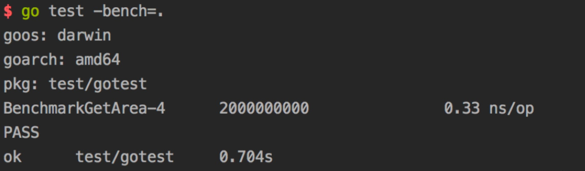
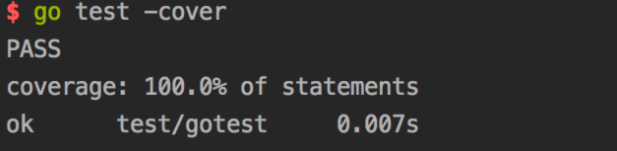
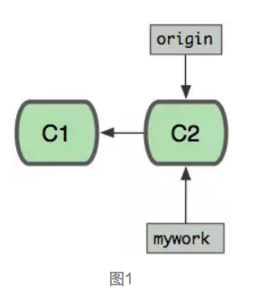
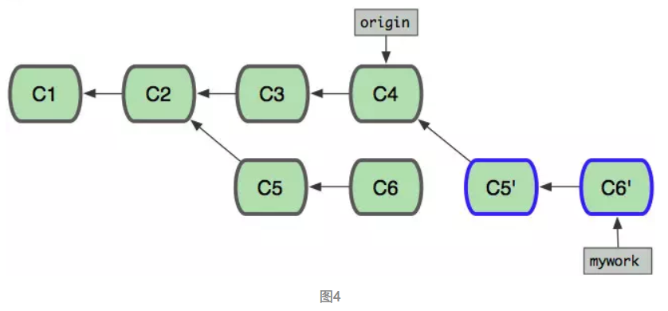
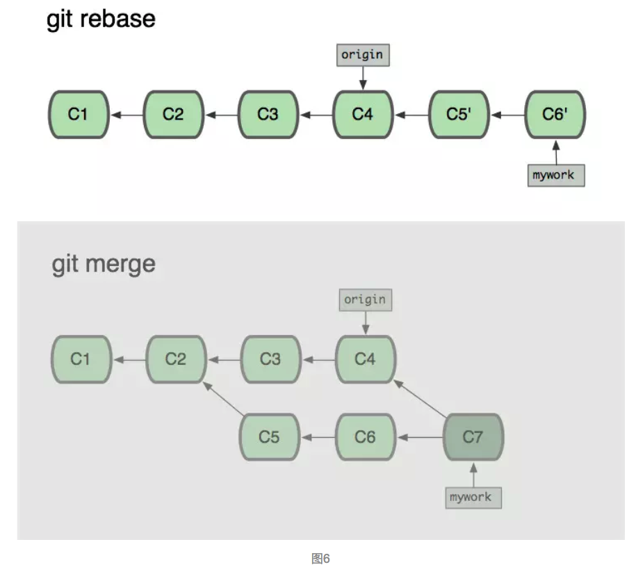

Introduction
This page updated at: 2023/06/01
本书将要记录的是个人在工作和学习中遇到的一些问题的总结和学习笔记，所有知识按照领域体系分类，标记上日期，以便日后随时查阅。
Linux
This page updated at: 2018/09/14
本章节记录与Linux/Unix/Mac有关的知识笔记
Linux-Inside
This page updated at: 2018/09/14
A book-in-progress about the linux kernel and its insides.
The goal is simple - to share my modest knowledge about the insides of the linux kernel and help people who are interested in linux kernel insides, and other low-level subject matter. Feel free to go through the book Start here
Vim中如何快速进行光标移动
This page updated at: 2019/01/02

vim提供的移动方式多如牛毛，但我们并不需要掌握全部这些命令，只需要掌握最适合自己的那些命令。因为我们最终的目的，并不是成为一个vim高手，而是更高效的编辑文本。
我们下面介绍的命令，如果没有特别说明，都是在Normal模式下使用的命令。
这些命令的帮助入口，就是":help 命令名"。例如，对于"j"命令，查看它的帮助，使用":help j"。
[上下左右]
让我们从最简单的、也是使用频率最高的h, j, k, l开始。
h, j, k, l的移动方式，已经成为vim的标志之一，并且也为更多的软件所接受。如果你仍在用上下左右光标来移动的话，说明你内心并没有真正接受vim的哲学，如果真的打算把vim做为你的编辑工具，就从使用h, j, k, l开始吧！
h, j, k, l分别代表向左、下、上、右移动。如同许多vim命令一样，可以在这些键前加一个数字，表示移动的倍数。例如，"10j"表示向下移动10行；"10l"表示向右移动10列。
缺省情况下，h和l命令不会把光标移出当前行。如果已经到了行首，无论按多少次h键，光标始终停留在行首，l命令也类似。如果希望h和l命令可以移出当前行，更改'whichwrap'选项的设置(:help 'whichwrap')。
vim的作者在安排按键功能时别具匠心，在其它的键绑定中，也能看到h, j, k, l所代表的含义。
例如，使光标在多个窗口间上下左右移动的命令，就是CTRL-W h/j/k/l (:help CTRL-W_h, ...)；
再如，上下左右移动窗口位置的命令，是CTRL-W H/J/K/L (:help CTRL-W_H, ...)。注意，这里的H, J, K, L是大写的。
[ 翻页 ]
在vim中翻页，同样可以使用PageUp和PageDown，不过，像使用上下左右光标一样，你的手指会移出主键盘区。因此，我们通常使用CTRL-B和CTRL-F来进行翻页，它们的功能等同于PageUp和PageDown。CTRL-B和CTRL-F前也可以加上数字，来表示向上或向下翻多少页。
vim中还可以向上或向下翻半页，翻指定的行数，参见scroll.txt帮助手册页。
[ 在文件中移动 ]
vim提供了一些命令，可以方便的在文件中移动。
命令"gg"移动到文件的第一行，而命令"G"则移动到文件的最后一行。
命令"G"前可以加上数字，在这里，数字的含义并不是倍数，而是你打算跳转的行号。例如，你想跳转到文件的第1234行，只需输入"1234G"。
你还可以按百分比来跳转，例如，你想跳到文件的正中间，输入"50%"；如果想跳到75%处，输入"75%"。注意，你必须先输入一个数字，然后输入"%"。如果直接输入"%"，那含义就完全不同了。":help N%"阅读更多细节。
在文件中移动，你可能会迷失自己的位置，这时使用"CTRL-G"命令，查看一下自己位置。这个命令会显示出光标的位置及其它信息。为了避免迷失，你可以打开行号显示；使用":set number"命令后，会在每一行前显示出行号，可以更方便的定位的跳转（:help 'number'）。
[ 移动到指定字符 ]
上面的命令都是行间移动(除h, l外)，也就是从当前行移动到另外一行。如果我们想在当前行内快速移动，可以使用f, t, F, T命令。
"f"命令移动到光标右边的指定字符上，例如，"fx"，会把移动到光标右边的第一个'x'字符上。"F"命令则反方向查找，也就是移动到光标左边的指定字符上。
"t"命令和"f"命令的区别在于，它移动到光标右边的指定字符之前。例如，"tx"会移动到光标右边第一个'x'字符的前面。"T"命令是"t"命令的反向版本，它移动到光标左边的指定字符之后。
这四个命令只在当前行中移动光标，光标不会跨越回车换行符。
可以在命令前面使用数字，表示倍数。例如，"3fx"表示移动到光标右边的第3个'x'字符上。
";"命令重复前一次输入的f, t, F, T命令，而","命令会反方向重复前一次输入的f, t, F, T命令。这两个命令前也可以使用数字来表示倍数。
[ 行首/行尾 ]
在vim中，移动到行首的命令非常简单，就是"0"，这个是数字0，而不是大写字母O。移动到行尾的命令是"$"。
另外还有一个命令"^"，用它可以移动到行首的第一个非空白字符。
在正则表达式中我们会看到，"^"字符代表行首，而"$"字符代表行尾。可见，vi/vim的按键的安排，的确是别具匠心的。
[ 按单词移动 ]
我们知道，英文文档的主体是单词，通常用空白字符(包括空格、制表符和回车换行符)来分隔单词。vim中提供了许多命令来按单词移动。
要根据单词来移动，首先要把文本分隔为一个个独立的单词。vim在对单词进行分隔时，会把'iskeyword'选项中的字符做为单词的组成字符。也就是说，一个单词(word)由'iskeyword'选项中定义的字符构成，它前面、后面的字符不在'iskeyword'选项定义的字符中。例如，如果我们把'iskeyword'选项设置为"a-z,A-Z,48-57,"，那么"FooBar_123"被做为一个单词，而"FooBar-123"被做为三个单词："FooBar", "-"和"123"。"a-z,A-Z,48-57,"中的48-57表示ASCII码表中的数字0-9。
vim中，移动光标到下一个单词的词首，使用命令"w"，移动光标到上一个单词的词首，使用命令"b"；移动光标到下一个单词的结尾，用命令"e"，移动光标到上一个单词的结尾，使用命令"ge"。
上面这些命令都使用'iskeyword'选项中的字符来确定单词的分界，还有几个命令，只把空白字符当做"单词"的分界。当然，这里说的"单词"已经不是传统意义上的单词了，而是由非空白字符构成一串字串。命令"W"移动光标到下个字串的开始，命令"B"移动到上个字串的开始；命令"E"移动到下个字串的结尾，命令"gE"移动到上个字串的结尾。和上面的命令比较一下，发现什么规律没有？
[ H/M/L ]
注意：这几个命令是大写的。
使用H/M/L这三个键，可以让光标跳到当前窗口的顶部、中间、和底部，停留在第一个非空字符上。H命令和L命令前也可以加一个数字，但数字的含义不再是倍数，而是指距窗口顶部、底部的行数。例如，"3H"表示光标移动到距窗口顶部第3行的位置；"5L"表示光标移动到距窗口底部5行的位置。
[ 相对于光标滚屏 ]
在阅读代码时，有时我们需要根据光标所在的位置滚屏，把光标所在行移动窗口的顶端、中间或底部，这时就可以用到"zt"、"zz"和"zb"。这种滚屏方式相对于翻页来讲，它的好处在于，你能够始终以当前光标位置做为参照，不会出现翻几次页后，发现自己迷失了方向。 ^_^
[ 查找 ]
查找，也可以做为一种快速移动的方式。
在vim中查找非常容易，直接在Normal模式下输入"/"，然后输入你想查询的字符串，回车，就跳转到第一个匹配的地方了。"/"是向下查找，而"?"进行反方向查找。命令"n"重复上一次的查找命令，而命令"N"也重复上一次的查找命令，只不过它按相反方向查找。
vim保存了查找的历史记录，你可以在输入"/"或"?"后，用上、下光标键(或CTRL-P/CTRL-N)翻看历史记录，然后再次执行这个查找。
另外你还可以使用"q/"和"q?"命令，在vim窗口最下面打开一个新的窗口，这个窗口会列出你的查找历史记录，你可以使用任何vim编辑命令对此窗口的内容进行编辑，然后再按回车，就会对光标所在的行的内容进行查找。
JAVA
This page updated at: 2018/09/02
本章节记录与Java(JVM)相关或相近的知识笔记，包括但不限于：JVM、Spring、设计模式、Web、Kotlin、Scala 等
代理模式介绍
This page updated at: 2018/09/02
代理模式是一种设计模式，提供了对目标对象额外的访问方式，即通过代理对象访问目标对象，这样可以在不修改原目标对象的前提下，提供额外的功能操作，扩展目标对象的功能。
简言之，代理模式就是设置一个中间代理来控制访问原目标对象，以达到增强原对象的功能和简化访问方式。
代理模式UML类图
举个例子，我们生活中经常到火车站去买车票，但是人一多的话，就会非常拥挤，于是就有了代售点，我们能从代售点买车票了。这其中就是代理模式的体现，代售点代理了火车站对象，提供购买车票的方法。
(1) 静态代理
这种代理方式需要代理对象和目标对象实现一样的接口。
优点：可以在不修改目标对象的前提下扩展目标对象的功能。
缺点：
冗余。由于代理对象要实现与目标对象一致的接口，会产生过多的代理类。 不易维护。一旦接口增加方法，目标对象与代理对象都要进行修改。
举例：保存用户功能的静态代理实现
- 接口类： IUserDao
package com.proxy;
public interface IUserDao {
public void save();
}
- 目标对象：UserDao
package com.proxy;
public class UserDao implements IUserDao{
@Override
public void save() {
System.out.println("保存数据");
}
}
- 静态代理对象：UserDapProxy 需要实现IUserDao接口！
package com.proxy;
public class UserDaoProxy implements IUserDao{
private IUserDao target;
public UserDaoProxy(IUserDao target) {
this.target = target;
}
@Override
public void save() {
System.out.println("开启事务");//扩展了额外功能
target.save();
System.out.println("提交事务");
}
}
- 测试类：TestProxy
package com.proxy;
import org.junit.Test;
public class StaticUserProxy {
@Test
public void testStaticProxy(){
//目标对象
IUserDao target = new UserDao();
//代理对象
UserDaoProxy proxy = new UserDaoProxy(target);
proxy.save();
}
}
- 测试结果
开启事务
保存数据
提交事务
(2) 动态代理
动态代理利用了JDK API，动态地在内存中构建代理对象，从而实现对目标对象的代理功能。动态代理又被称为JDK代理或接口代理。
静态代理与动态代理的区别主要在：
静态代理在编译时就已经实现，编译完成后代理类是一个实际的class文件 动态代理是在运行时动态生成的，即编译完成后没有实际的class文件，而是在运行时动态生成类字节码，并加载到JVM中
特点：动态代理对象不需要实现接口，但是要求目标对象必须实现接口，否则不能使用动态代理。
JDK中生成代理对象主要涉及的类有
java.lang.reflect Proxy
主要方法为
static Object newProxyInstance(ClassLoader loader, //指定当前目标对象使用类加载器
Class<?>[] interfaces, //目标对象实现的接口的类型
InvocationHandler h //事件处理器
)
//返回一个指定接口的代理类实例，该接口可以将方法调用指派到指定的调用处理程序。
java.lang.reflect InvocationHandler，主要方法为
Object invoke(Object proxy, Method method, Object[] args)
// 在代理实例上处理方法调用并返回结果。
举例：保存用户功能的动态代理实现
接口类： IUserDao
package com.proxy;
public interface IUserDao {
public void save();
}
- 目标对象：UserDao
package com.proxy;
public class UserDao implements IUserDao{
@Override
public void save() {
System.out.println("保存数据");
}
}
- 动态代理对象：UserProxyFactory
package com.proxy;
import java.lang.reflect.InvocationHandler;
import java.lang.reflect.Method;
import java.lang.reflect.Proxy;
public class ProxyFactory {
private Object target;// 维护一个目标对象
public ProxyFactory(Object target) {
this.target = target;
}
// 为目标对象生成代理对象
public Object getProxyInstance() {
return Proxy.newProxyInstance(target.getClass().getClassLoader(), target.getClass().getInterfaces(),
new InvocationHandler() {
@Override
public Object invoke(Object proxy, Method method, Object[] args) throws Throwable {
System.out.println("开启事务");
// 执行目标对象方法
Object returnValue = method.invoke(target, args);
System.out.println("提交事务");
return null;
}
});
}
}
- 测试类：TestProxy
package com.proxy;
import org.junit.Test;
public class TestProxy {
@Test
public void testDynamicProxy (){
IUserDao target = new UserDao();
System.out.println(target.getClass()); //输出目标对象信息
IUserDao proxy = (IUserDao) new ProxyFactory(target).getProxyInstance();
System.out.println(proxy.getClass()); //输出代理对象信息
proxy.save(); //执行代理方法
}
}
- 输出结果
class com.proxy.UserDao
class com.sun.proxy.$Proxy4
开启事务
保存数据
提交事务
(3) Cglib代理
cglib is a powerful, high performance and quality Code Generation Library. It can extend JAVA classes and implement interfaces at runtime.
Cglib (Code Generation Library )是一个第三方代码生成类库，运行时在内存中动态生成一个子类对象从而实现对目标对象功能的扩展。
Cglib特点:
JDK的动态代理有一个限制，就是使用动态代理的对象必须实现一个或多个接口。 如果想代理没有实现接口的类，就可以使用CGLIB实现。
CGLIB是一个强大的高性能的代码生成包，它可以在运行期扩展Java类与实现Java接口。
它广泛的被许多AOP的框架使用，例如Spring AOP和dynaop，为他们提供方法的interception（拦截）。
CGLIB包的底层是通过使用一个小而快的字节码处理框架ASM，来转换字节码并生成新的类。
不鼓励直接使用ASM，因为它需要你对JVM内部结构包括class文件的格式和指令集都很熟悉。 cglib与动态代理最大的区别就是
使用动态代理的对象必须实现一个或多个接口
使用cglib代理的对象则无需实现接口，达到代理类无侵入。
使用cglib需要引入cglib的jar包，如果你已经有spring-core的jar包，则无需引入，因为spring中包含了cglib。
cglib的Maven坐标
<dependency>
<groupId>cglib</groupId>
<artifactId>cglib</artifactId>
<version>3.2.5</version>
</dependency>
举例：保存用户功能的动态代理实现
- 目标对象：UserDao
package com.cglib;
public class UserDao{
public void save() {
System.out.println("保存数据");
}
}
- 代理对象：ProxyFactory
package com.cglib;
import java.lang.reflect.Method;
import net.sf.cglib.proxy.Enhancer;
import net.sf.cglib.proxy.MethodInterceptor;
import net.sf.cglib.proxy.MethodProxy;
public class ProxyFactory implements MethodInterceptor{
private Object target;//维护一个目标对象
public ProxyFactory(Object target) {
this.target = target;
}
//为目标对象生成代理对象
public Object getProxyInstance() {
//工具类
Enhancer en = new Enhancer();
//设置父类
en.setSuperclass(target.getClass());
//设置回调函数
en.setCallback(this);
//创建子类对象代理
return en.create();
}
@Override
public Object intercept(Object obj, Method method, Object[] args, MethodProxy proxy) throws Throwable {
System.out.println("开启事务");
// 执行目标对象的方法
Object returnValue = method.invoke(target, args);
System.out.println("关闭事务");
return null;
}
}
- 测试类：TestProxy
package com.cglib;
import org.junit.Test;
public class TestProxy {
@Test
public void testCglibProxy(){
//目标对象
UserDao target = new UserDao();
System.out.println(target.getClass());
//代理对象
UserDao proxy = (UserDao) new ProxyFactory(target).getProxyInstance();
System.out.println(proxy.getClass());
//执行代理对象方法
proxy.save();
}
}
- 输出结果
class com.cglib.UserDao
class com.cglib.UserDao$$EnhancerByCGLIB$$552188b6
开启事务
保存数据
关闭事务
总结
静态代理实现较简单，只要代理对象对目标对象进行包装，即可实现增强功能，但静态代理只能为一个目标对象服务，如果目标对象过多，则会产生很多代理类。
JDK动态代理需要目标对象实现业务接口，代理类只需实现InvocationHandler接口。
动态代理生成的类为 lass com.sun.proxy.$Proxy4，cglib代理生成的类为class com.cglib.UserDao$$EnhancerByCGLIB$$552188b6。
静态代理在编译时产生class字节码文件，可以直接使用，效率高。
动态代理必须实现InvocationHandler接口，通过反射代理方法，比较消耗系统性能，但可以减少代理类的数量，使用更灵活。
cglib代理无需实现接口，通过生成类字节码实现代理，比反射稍快，不存在性能问题，但cglib会继承目标对象，需要重写方法，所以目标对象不能为final类。
Golang
This page updated at: 2018/09/04
本章节记录与GO相关或相近的知识笔记，包括但不限于：Docker、k8s、etcd、golang 等
深入解析GO
This page updated at: 2018/11/8
因为自己对Go底层的东西比较感兴趣，所以抽空在写一本开源的书籍《深入解析Go》。写这本书不表示我能力很强，而是我愿意分享，和大家一起分享对Go语言的内部实现的一些研究。
我一直认为知识是用来分享的，让更多的人分享自己拥有的一切知识这个才是人生最大的快乐。
这本书目前我放在Github上，时间有限、能力有限，所以希望更多的朋友参与到这个开源项目中来。
Golang 协程正确的使用方法
This page updated at: 2019/03/18
错误的使用方法
package main
// 错误使用案例
import (
"time"
"fmt"
)
var c1 chan string = make(chan string)
func main(){
func(){
time.Sleep(time.Second * 2)
c1 <- "result 1"
}()
fmt.Println("c1 is", <-c1)
}
由于 c1 在创建时没有指定缓存长度, 所以在写入channel c1 时，必须应该有对应的接收端在等待，上例中，由于对c1的写入时c1没有缓存区且没有接收端，所以就报错了。
fmt.Println("c1 is", <-c1)
这段代码本来是可以阻塞的，但是这种用法是错误的
正确的使用方法 （将写入放到单独的协程中）
通过将写入端放到单独的协程中，使得channel 的写入端和接收端可以对接。
func main(){
go func(){
time.Sleep(time.Second * 2)
c1 <- "result 1"
}()
fmt.Println("I am here")
fmt.Println("c1 is", <-c1)
}
可以看到 匿名函数部分代码是在独立的协程中执行的，在同一个协程中对一个channel写入时，如果channel 没有缓存长度，必然会报错，见错误案例
select 用法
select 可以同时监听多个channel
阻塞方式
执行到select 语句时如果所有的case 中的channel 都没有数据，select 语句将会阻塞，直到一个case中的 channel 获取到数据。
package main
import (
"time"
"fmt"
)
func AskX(bid1 chan int) {
for i:=100 ;i<105 ; i++{
time.Sleep(time.Second*1)
bid1 <- i
}
}
func AskY(bid2 chan int) {
for i:=0 ; i<5; i++{
time.Sleep(time.Second*2)
bid2 <- i
}
}
func main(){
bid1 := make(chan int)
bid2 := make(chan int)
go AskX(bid1)
go AskY(bid2)
select {
case Xbid := <-bid1:
fmt.Println(Xbid)
case Ybid := <-bid2:
fmt.Println(Ybid)
}
}
运行的结果是，代码被阻塞1秒后输出100, 因为channel bid1 在1秒后拿到了数据，select 阻塞结束输出
非阻塞方式
将阻塞部分 select 处代码修改为
select {
case Xbid := <-bid1:
fmt.Println(Xbid)
case Ybid := <-bid2:
fmt.Println(Ybid)
default :
fmt.Println("no data.")
}
可以看到只添加了 default 语句，表示当所有的 channel 都取不到数据时，默认执行 default 后面的语句
带超时机制的
select {
case Xbid := <-bid1:
fmt.Println(Xbid)
case Ybid := <-bid2:
fmt.Println(Ybid)
case <-time.After(time.Second*2):
fmt.Println("overtime for 2 seconds")
}
上面的代码表示，当所有channel 超过2秒还没有取到数据，就会执行超时设置部分的代码。
总结
-
在同一个协程中如果对一个channel写入数据，如果channel 没有缓存长度，必然报错
-
在主协程中有接收端，在子协程中没有发送端会报错
-
在子协程中有发送端，在其他协程中没有接收端，不会报错
Golang的协程池设计
This page updated at: 2019/03/18
协程池的设计思路
为什么需要协程池？
虽然go语言在调度Goroutine已经优化的非常完成，并且Goroutine作为轻量级执行流程，也不需要CPU调度器的切换，我们一般在使用的时候，如果想处理一个分支流程，直接go一下即可。
但是，如果无休止的开辟Goroutine依然会出现高频率的调度Groutine，那么依然会浪费很多上下文切换的资源，导致做无用功。所以设计一个Goroutine池限制Goroutine的开辟个数在大型并发场景还是必要的。
快速实现并发协程通讯池
package main
import (
"fmt"
"time"
)
/* 有关Task任务相关定义及操作 */
//定义任务Task类型,每一个任务Task都可以抽象成一个函数
type Task struct {
f func() error //一个无参的函数类型
}
//通过NewTask来创建一个Task
func NewTask(f func() error) *Task {
t := Task{
f: f,
}
return &t
}
//执行Task任务的方法
func (t *Task) Execute() {
t.f() //调用任务所绑定的函数
}
/* 有关协程池的定义及操作 */
//定义池类型
type Pool struct {
//对外接收Task的入口
EntryChannel chan *Task
//协程池最大worker数量,限定Goroutine的个数
worker_num int
//协程池内部的任务就绪队列
JobsChannel chan *Task
}
//创建一个协程池
func NewPool(cap int) *Pool {
p := Pool{
EntryChannel: make(chan *Task),
worker_num: cap,
JobsChannel: make(chan *Task),
}
return &p
}
//协程池创建一个worker并且开始工作
func (p *Pool) worker(work_ID int) {
//worker不断的从JobsChannel内部任务队列中拿任务
for task := range p.JobsChannel {
//如果拿到任务,则执行task任务
task.Execute()
fmt.Println("worker ID ", work_ID, " 执行完毕任务")
}
}
//让协程池Pool开始工作
func (p *Pool) Run() {
//1,首先根据协程池的worker数量限定,开启固定数量的Worker,
// 每一个Worker用一个Goroutine承载
for i := 0; i < p.worker_num; i++ {
go p.worker(i)
}
//2, 从EntryChannel协程池入口取外界传递过来的任务
// 并且将任务送进JobsChannel中
for task := range p.EntryChannel {
p.JobsChannel <- task
}
//3, 执行完毕需要关闭JobsChannel
close(p.JobsChannel)
//4, 执行完毕需要关闭EntryChannel
close(p.EntryChannel)
}
//主函数
func main() {
//创建一个Task
t := NewTask(func() error {
fmt.Println(time.Now())
return nil
})
//创建一个协程池,最大开启3个协程worker
p := NewPool(3)
//开一个协程 不断的向 Pool 输送打印一条时间的task任务
go func() {
for {
p.EntryChannel <- t
}
}()
//启动协程池p
p.Run()
}
main() & init()
This page updated at: 2018/09/04
main() ,init()方法是go中默认的两个方法，两个保留的关键字
init（）方法 是在任何package中都可以出现，但是建议 每个package中只包含一个init()函数比较好，容易理解。
但是main() 方法只能用在package main 中。
Go程序会自动调用init()和main()，所以你不需要在任何地方调用这两个函数。每个 package中的init函数都是可选的，但package main就必须包含一个main函数。
程序的初始化和执行都起始于main包。如果main包还导入了其它的包，那么就会在编译时 将它们依次导入。有时一个包会被多个包同时导入，那么它只会被导入一次（例如很多包可 能都会用到fmt包，但它只会被导入一次，因为没有必要导入多次）。当一个包被导入时， 如果该包还导入了其它的包，那么会先将其它包导入进来，然后再对这些包中的包级常量 和变量进行初始化，接着执行init函数（如果有的话），依次类推。等所有被导入的包都加 载完毕了，就会开始对main包中的包级常量和变量进行初始化，然后执行main包中的 init函数（如果存在的话），最后执行main函数
Golang 在 Mac、Linux、Windows 下如何交叉编译
This page updated at: 2018/09/28
Golang 支持交叉编译，在一个平台上生成另一个平台的可执行程序，最近使用了一下，非常好用，这里备忘一下。
Mac 下编译 Linux 和 Windows 64位可执行程序
CGO_ENABLED=0 GOOS=linux GOARCH=amd64 go build main.go
CGO_ENABLED=0 GOOS=windows GOARCH=amd64 go build main.go
Linux 下编译 Mac 和 Windows 64位可执行程序
CGO_ENABLED=0 GOOS=darwin GOARCH=amd64 go build main.go
CGO_ENABLED=0 GOOS=windows GOARCH=amd64 go build main.go
Windows 下编译 Mac 和 Linux 64位可执行程序
SET CGO_ENABLED=0
SET GOOS=darwin
SET GOARCH=amd64
go build main.go
SET CGO_ENABLED=0
SET GOOS=linux
SET GOARCH=amd64
go build main.go
GOOS：目标平台的操作系统（darwin、freebsd、linux、windows） GOARCH：目标平台的体系架构（386、amd64、arm） 交叉编译不支持 CGO 所以要禁用它
上面的命令编译 64 位可执行程序，你当然应该也会使用 386 编译 32 位可执行程序
Golang的测试框架
This page updated at: 2018/10/22
前言
每种语言都有自己的测试姿势，golang的作者提供了一个testing的包来供大家完成测试之旅，简单好用，一起走一波。
10s后以下知识点即将靠近：
- 1.为什么需要测试？
- 2.Golang的测试规矩
- 3.功能测试
- 4.压力测试
- 5.测试代码的覆盖率测试
- 6.测试所有的参数备忘
1.为什么需要测试？
这个是一个老生常谈的话题了，忘记哪里看的数据了，表明是完善的测试体系（这里主要指自测），其实是会提高开发效率的。
当项目足够复杂的时候，想要保证尽可能少的bug，两种方式最有效：1.代码审核 2.测试。
所以Golang官方提供了testing包来满足大家的需求。
2.Golang的测试规矩
通过testing包我们主要是可以进行三个测试的姿势：1.功能测试 2.压力测试 3.测试代码覆盖率的测试(你写的测试用例覆盖了多少代码)。
在介绍以上三点之前，有一些Golang官方的一些约定（也可以说测试规矩）是需要遵守的，否则Golang是不承认你写的测试代码的。
| 关键点 | 说明 |
|---|---|
| 导入需要的包 | import testing (如果你是goland,那么可以忽略，因为ide就自动帮你加上) |
| 执行命令 | go test file_test.go |
| 测试文件命名 | 必须以_test.go结尾 |
| 功能测试的用力函数 | 必须以Test开头&&后头跟着的函数名不能以小写字母开头，比如：Testcbs 就是不行的，TestCbs就是ok的 |
| 功能测试参数 | testing.T |
| 压力测试用例函数 | 必须以Benchmark开头&&其后的函数名不能以小写字母开头(例子同上) |
| 压力测试参数 | testing.B |
| 测试信息 | .Log方法，默认情况下是不会显示的，只有在go test -v的时候显示 |
| 测试控制 | 通过Error/Errorf/FailNow/Fatal等来进行测试是否是失败，或者在失败的情况下的控制 |
| 压力测试命令 | go test -test.bench file_test.go |
| 压力测试的循环体 | 使用test.B.N |
3.功能测试
我创建了一个文件夹gotest，里头存在两个文件：1.正式文件cbstest.go 2.测试文件cbstest_test.go
上代码:
cbstest.go
package gotest
// 根据长宽获取面积
func GetArea(weight int, height int) int {
return weight*height
}
cbstest_test.go:
package gotest
import "testing"
func TestGetArea(t *testing.T) {
area := GetArea(40, 50)
if area != 2000 {
t.Error("测试失败")
}
}

4.压力测试
cbstest_test.go改造代码为压力测试：
package gotest
import "testing"
func BenchmarkGetArea(t *testing.B) {
for i := 0; i < t.N; i++ {
GetArea(40, 50)
}
}

5.测试代码的覆盖率测试
执行命令：go test -cover

需要特别说明的是，测试的覆盖度正常情况下是跑不满100%，比如说写的代码是来接住panic的等等异常的，那其实就不会走到了。
6.测试所有的参数备忘
The test binary also accepts flags that control execution of the test; these flags are also accessible by ‘go test’.
-bench regexp
Run only those benchmarks matching a regular expression.
By default, no benchmarks are run.
To run all benchmarks, use '-bench .' or '-bench=.'.
The regular expression is split by unbracketed slash (/)
characters into a sequence of regular expressions, and each
part of a benchmark's identifier must match the corresponding
element in the sequence, if any. Possible parents of matches
are run with b.N=1 to identify sub-benchmarks. For example,
given -bench=X/Y, top-level benchmarks matching X are run
with b.N=1 to find any sub-benchmarks matching Y, which are
then run in full.
-benchtime t
Run enough iterations of each benchmark to take t, specified
as a time.Duration (for example, -benchtime 1h30s).
The default is 1 second (1s).
-count n
Run each test and benchmark n times (default 1).
If -cpu is set, run n times for each GOMAXPROCS value.
Examples are always run once.
-cover
Enable coverage analysis.
Note that because coverage works by annotating the source
code before compilation, compilation and test failures with
coverage enabled may report line numbers that don't correspond
to the original sources.
-covermode set,count,atomic
Set the mode for coverage analysis for the package[s]
being tested. The default is "set" unless -race is enabled,
in which case it is "atomic".
The values:
set: bool: does this statement run?
count: int: how many times does this statement run?
atomic: int: count, but correct in multithreaded tests;
significantly more expensive.
Sets -cover.
-coverpkg pattern1,pattern2,pattern3
Apply coverage analysis in each test to packages matching the patterns.
The default is for each test to analyze only the package being tested.
See 'go help packages' for a description of package patterns.
Sets -cover.
-cpu 1,2,4
Specify a list of GOMAXPROCS values for which the tests or
benchmarks should be executed. The default is the current value
of GOMAXPROCS.
-failfast
Do not start new tests after the first test failure.
-list regexp
List tests, benchmarks, or examples matching the regular expression.
No tests, benchmarks or examples will be run. This will only
list top-level tests. No subtest or subbenchmarks will be shown.
-parallel n
Allow parallel execution of test functions that call t.Parallel.
The value of this flag is the maximum number of tests to run
simultaneously; by default, it is set to the value of GOMAXPROCS.
Note that -parallel only applies within a single test binary.
The 'go test' command may run tests for different packages
in parallel as well, according to the setting of the -p flag
(see 'go help build').
-run regexp
Run only those tests and examples matching the regular expression.
For tests, the regular expression is split by unbracketed slash (/)
characters into a sequence of regular expressions, and each part
of a test's identifier must match the corresponding element in
the sequence, if any. Note that possible parents of matches are
run too, so that -run=X/Y matches and runs and reports the result
of all tests matching X, even those without sub-tests matching Y,
because it must run them to look for those sub-tests.
-short
Tell long-running tests to shorten their run time.
It is off by default but set during all.bash so that installing
the Go tree can run a sanity check but not spend time running
exhaustive tests.
-timeout d
If a test binary runs longer than duration d, panic.
If d is 0, the timeout is disabled.
The default is 10 minutes (10m).
-v
Verbose output: log all tests as they are run. Also print all
text from Log and Logf calls even if the test succeeds.
-vet list
Configure the invocation of "go vet" during "go test"
to use the comma-separated list of vet checks.
If list is empty, "go test" runs "go vet" with a curated list of
checks believed to be always worth addressing.
If list is "off", "go test" does not run "go vet" at all.
The following flags are also recognized by ‘go test’ and can be used to profile the tests during execution:
-benchmem
Print memory allocation statistics for benchmarks.
-blockprofile block.out
Write a goroutine blocking profile to the specified file
when all tests are complete.
Writes test binary as -c would.
-blockprofilerate n
Control the detail provided in goroutine blocking profiles by
calling runtime.SetBlockProfileRate with n.
See 'go doc runtime.SetBlockProfileRate'.
The profiler aims to sample, on average, one blocking event every
n nanoseconds the program spends blocked. By default,
if -test.blockprofile is set without this flag, all blocking events
are recorded, equivalent to -test.blockprofilerate=1.
-coverprofile cover.out
Write a coverage profile to the file after all tests have passed.
Sets -cover.
-cpuprofile cpu.out
Write a CPU profile to the specified file before exiting.
Writes test binary as -c would.
-memprofile mem.out
Write a memory profile to the file after all tests have passed.
Writes test binary as -c would.
-memprofilerate n
Enable more precise (and expensive) memory profiles by setting
runtime.MemProfileRate. See 'go doc runtime.MemProfileRate'.
To profile all memory allocations, use -test.memprofilerate=1
and pass --alloc_space flag to the pprof tool.
-mutexprofile mutex.out
Write a mutex contention profile to the specified file
when all tests are complete.
Writes test binary as -c would.
-mutexprofilefraction n
Sample 1 in n stack traces of goroutines holding a
contended mutex.
-outputdir directory
Place output files from profiling in the specified directory,
by default the directory in which "go test" is running.
-trace trace.out
Write an execution trace to the specified file before exiting.
关于/var/run/docker.sock
This page updated at: 2018/10/08
这篇博客介绍了什么是/var/run/docker.sock，以及如何使用/var/run/docker.sock与Docker守护进程通信，并且提供了两个简单的示例。理解这些，我们就可以运行一些能够管理Docker的Docker容器，比如Portainer、Kubernetes，是不是很神奇呢？
运行过Docker Hub的Docker镜像的话，会发现其中一些容器时需要挂载/var/run/docker.sock文件。这个文件是什么呢？为什么有些容器需要使用它？简单地说，它是Docker守护进程(Docker daemon)默认监听的Unix域套接字(Unix domain socket)，容器中的进程可以通过它与Docker守护进程进行通信。

Docker守护进程的API
安装Docker之后，Docker守护进程会监听Unix域套接字：/var/run/docker.sock。这一点可以通过Docker daemon的配置选项看出来(在ubuntu上执行cat /etc/default/docker )：
-H unix:///var/run/docker.sock
注: 监听网络TCP套接字或者其他套接字需要配置相应的-H选项。
Docker engine API v1.27 (最新版)定义的所有HTTP接口都可以通过/var/run/docker.sock调用。
运行容器
HTTP请求是通过docker.sock发送给Docker守护进程的。可以通过curl创建容器来说明这一点。使用HTTP接口运行容器需要两个步骤，先创建容器，然后启动容器。
1. 创建nginx容器
curl命令通过Unix套接字发送{“Image”:”nginx”}到Docker守护进程的/containers/create接口，这个将会基于Nginx镜像创建容器并返回容器的ID。
curl -XPOST --unix-socket /var/run/docker.sock -d ‘{“Image”:”nginx”}’ -H ‘Content-Type: application/json’ http://localhost/containers/create
输出返回了容器ID:
{“Id”:”fcb65c6147efb862d5ea3a2ef20e793c52f0fafa3eb04e4292cb4784c5777d65",”Warnings”:null}
2. 启动nginx容器
使用返回的容器ID，调用/containers//start接口，即可启动新创建的容器。
curl -XPOST --unix-socket /var/run/docker.sock http://localhost/containers/fcb6...7d65/start
查看已启动的容器:
docker ls
CONTAINER ID IMAGE COMMAND CREATED STATUS PORTS NAMES
fcb65c6147ef nginx “nginx -g ‘daemon …” 5 minutes ago Up 5 seconds 80/tcp, 443/tcp ecstatic_kirch
Docker守护进程的事件流
Docker的API提供了/events接口，可以用于获取Docker守护进程产生的所有事件流。负载均衡组件(load balancer)组件可以通过它获取容器的创建/删除事件，从而动态地更新配置。通过创建一个简单的容器，我们可以了解如何利用Docker守护进程的事件。
1. 运行alpine容器
下面的命令用于运行容器，并采用交互模式(interactive mode，该模式下会直接进入容器内)，同时绑定docker.sock。
docker run -v /var/run/docker.sock:/var/run/docker.sock -ti alpine sh
2. 监听Docker守护进程的事件流
在alpine容器内，可以通过Docker套接字发送HTTP请求到/events接口。这个命令会一直等待Docker daemon的事件。当新的事件发生时(例如创建了新的容器)，会看到输出信息。
curl --unix-socket /var/run/docker.sock http://localhost/events
3. 观察事件
基于Nginx镜像运行容器之后，通过aplpine容器的标准输出可以观察到Docker daemon生成的事件。
docker run -p 8080:80 -d nginx
可以观察到3个事件：
- 创建容器
- 连接默认的桥接网络(bridge network)
- 启动容器
结论
希望这些简单的解释可以帮助大家理解/var/run/docker.sock文件，并且明白它绑定到容器时有何作用。显然，真正的应用会使用代码而不是curl命令给Docker守护进程发送HTTP请求。
注意: 绑定Docker套接字之后，容器的权限会很高，可以控制Docker守护进程。因此，这一点必须谨慎使用，只能用于足够信任的容器。
RBAC——基于角色的访问控制
This page updated at: 2018/10/25
以下内容是 xingzhou 对 kubernetes 官方文档的翻译，原文地址 https://k8smeetup.github.io/docs/admin/authorization/rbac/
基于角色的访问控制（Role-Based Access Control, 即”RBAC”）使用”rbac.authorization.k8s.io” API Group实现授权决策，允许管理员通过Kubernetes API动态配置策略。
截至Kubernetes 1.6，RBAC模式处于beta版本。
要启用RBAC，请使用--authorization-mode=RBAC启动API Server。
API概述
本节将介绍RBAC API所定义的四种顶级类型。用户可以像使用其他Kubernetes API资源一样 （例如通过kubectl、API调用等）与这些资源进行交互。例如，命令kubectl create -f (resource).yml 可以被用于以下所有的例子，当然，读者在尝试前可能需要先阅读以下相关章节的内容。
Role与ClusterRole
在RBAC API中，一个角色包含了一套表示一组权限的规则。 权限以纯粹的累加形式累积（没有”否定”的规则）。 角色可以由命名空间（namespace）内的Role对象定义，而整个Kubernetes集群范围内有效的角色则通过ClusterRole对象实现。
一个Role对象只能用于授予对某一单一命名空间中资源的访问权限。 以下示例描述了”default”命名空间中的一个Role对象的定义，用于授予对pod的读访问权限：
kind: Role
apiVersion: rbac.authorization.k8s.io/v1beta1
metadata:
namespace: default
name: pod-reader
rules:
- apiGroups: [""] # 空字符串""表明使用core API group
resources: ["pods"]
verbs: ["get", "watch", "list"]
ClusterRole对象可以授予与Role对象相同的权限，但由于它们属于集群范围对象， 也可以使用它们授予对以下几种资源的访问权限：
- 集群范围资源（例如节点，即node）
- 非资源类型endpoint（例如”/healthz”）
- 跨所有命名空间的命名空间范围资源（例如pod，需要运行命令
kubectl get pods --all-namespaces来查询集群中所有的pod）
下面示例中的ClusterRole定义可用于授予用户对某一特定命名空间，或者所有命名空间中的secret（取决于其绑定方式）的读访问权限：
kind: ClusterRole
apiVersion: rbac.authorization.k8s.io/v1beta1
metadata:
# 鉴于ClusterRole是集群范围对象，所以这里不需要定义"namespace"字段
name: secret-reader
rules:
- apiGroups: [""]
resources: ["secrets"]
verbs: ["get", "watch", "list"]
RoleBinding与ClusterRoleBinding
角色绑定将一个角色中定义的各种权限授予一个或者一组用户。 角色绑定包含了一组相关主体（即subject, 包括用户——User、用户组——Group、或者服务账户——Service Account）以及对被授予角色的引用。 在命名空间中可以通过RoleBinding对象授予权限，而集群范围的权限授予则通过ClusterRoleBinding对象完成。
RoleBinding可以引用在同一命名空间内定义的Role对象。 下面示例中定义的RoleBinding对象在”default”命名空间中将”pod-reader”角色授予用户”jane”。 这一授权将允许用户”jane”从”default”命名空间中读取pod。
# 以下角色绑定定义将允许用户"jane"从"default"命名空间中读取pod。
kind: RoleBinding
apiVersion: rbac.authorization.k8s.io/v1beta1
metadata:
name: read-pods
namespace: default
subjects:
- kind: User
name: jane
apiGroup: rbac.authorization.k8s.io
roleRef:
kind: Role
name: pod-reader
apiGroup: rbac.authorization.k8s.io
RoleBinding对象也可以引用一个ClusterRole对象用于在RoleBinding所在的命名空间内授予用户对所引用的ClusterRole中 定义的命名空间资源的访问权限。这一点允许管理员在整个集群范围内首先定义一组通用的角色，然后再在不同的命名空间中复用这些角色。
例如，尽管下面示例中的RoleBinding引用的是一个ClusterRole对象，但是用户”dave”（即角色绑定主体）还是只能读取”development” 命名空间中的secret（即RoleBinding所在的命名空间）。
# 以下角色绑定允许用户"dave"读取"development"命名空间中的secret。
kind: RoleBinding
apiVersion: rbac.authorization.k8s.io/v1beta1
metadata:
name: read-secrets
namespace: development # 这里表明仅授权读取"development"命名空间中的资源。
subjects:
- kind: User
name: dave
apiGroup: rbac.authorization.k8s.io
roleRef:
kind: ClusterRole
name: secret-reader
apiGroup: rbac.authorization.k8s.io
最后，可以使用ClusterRoleBinding在集群级别和所有命名空间中授予权限。下面示例中所定义的ClusterRoleBinding 允许在用户组”manager”中的任何用户都可以读取集群中任何命名空间中的secret。
# 以下`ClusterRoleBinding`对象允许在用户组"manager"中的任何用户都可以读取集群中任何命名空间中的secret。
kind: ClusterRoleBinding
apiVersion: rbac.authorization.k8s.io/v1beta1
metadata:
name: read-secrets-global
subjects:
- kind: Group
name: manager
apiGroup: rbac.authorization.k8s.io
roleRef:
kind: ClusterRole
name: secret-reader
apiGroup: rbac.authorization.k8s.io
对资源的引用
大多数资源由代表其名字的字符串表示，例如”pods”，就像它们出现在相关API endpoint的URL中一样。然而，有一些Kubernetes API还 包含了”子资源”，比如pod的logs。在Kubernetes中，pod logs endpoint的URL格式为：
GET /api/v1/namespaces/{namespace}/pods/{name}/log
在这种情况下，”pods”是命名空间资源，而”log”是pods的子资源。为了在RBAC角色中表示出这一点，我们需要使用斜线来划分资源 与子资源。如果需要角色绑定主体读取pods以及pod log，您需要定义以下角色：
kind: Role
apiVersion: rbac.authorization.k8s.io/v1beta1
metadata:
namespace: default
name: pod-and-pod-logs-reader
rules:
- apiGroups: [""]
resources: ["pods", "pods/log"]
verbs: ["get", "list"]
通过resourceNames列表，角色可以针对不同种类的请求根据资源名引用资源实例。当指定了resourceNames列表时，不同动作 种类的请求的权限，如使用”get”、”delete”、”update”以及”patch”等动词的请求，将被限定到资源列表中所包含的资源实例上。 例如，如果需要限定一个角色绑定主体只能”get”或者”update”一个configmap时，您可以定义以下角色：
kind: Role
apiVersion: rbac.authorization.k8s.io/v1beta1
metadata:
namespace: default
name: configmap-updater
rules:
- apiGroups: [""]
resources: ["configmap"]
resourceNames: ["my-configmap"]
verbs: ["update", "get"]
值得注意的是，如果设置了resourceNames，则请求所使用的动词不能是list、watch、create或者deletecollection。 由于资源名不会出现在create、list、watch和deletecollection等API请求的URL中，所以这些请求动词不会被设置了resourceNames 的规则所允许，因为规则中的resourceNames部分不会匹配这些请求。
一些角色定义的例子
在以下示例中，我们仅截取展示了rules部分的定义。
允许读取core API Group中定义的资源”pods”：
rules:
- apiGroups: [""]
resources: ["pods"]
verbs: ["get", "list", "watch"]
允许读写在”extensions”和”apps” API Group中定义的”deployments”：
rules:
- apiGroups: ["extensions", "apps"]
resources: ["deployments"]
verbs: ["get", "list", "watch", "create", "update", "patch", "delete"]
允许读取”pods”以及读写”jobs”：
rules:
- apiGroups: [""]
resources: ["pods"]
verbs: ["get", "list", "watch"]
- apiGroups: ["batch", "extensions"]
resources: ["jobs"]
verbs: ["get", "list", "watch", "create", "update", "patch", "delete"]
允许读取一个名为”my-config”的ConfigMap实例（需要将其通过RoleBinding绑定从而限制针对某一个命名空间中定义的一个ConfigMap实例的访问）：
rules:
- apiGroups: [""]
resources: ["configmaps"]
resourceNames: ["my-config"]
verbs: ["get"]
允许读取core API Group中的”nodes”资源（由于Node是集群级别资源，所以此ClusterRole定义需要与一个ClusterRoleBinding绑定才能有效）：
rules:
- apiGroups: [""]
resources: ["nodes"]
verbs: ["get", "list", "watch"]
允许对非资源endpoint “/healthz”及其所有子路径的”GET”和”POST”请求（此ClusterRole定义需要与一个ClusterRoleBinding绑定才能有效）：
rules:
- nonResourceURLs: ["/healthz", "/healthz/*"] # 在非资源URL中，'*'代表后缀通配符
verbs: ["get", "post"]
对角色绑定主体（Subject）的引用
RoleBinding或者ClusterRoleBinding将角色绑定到角色绑定主体（Subject）。 角色绑定主体可以是用户组（Group）、用户（User）或者服务账户（Service Accounts）。
用户由字符串表示。可以是纯粹的用户名，例如”alice”、电子邮件风格的名字，如 “bob@example.com” 或者是用字符串表示的数字id。由Kubernetes管理员配置认证模块 以产生所需格式的用户名。对于用户名，RBAC授权系统不要求任何特定的格式。然而，前缀system:是 为Kubernetes系统使用而保留的，所以管理员应该确保用户名不会意外地包含这个前缀。
Kubernetes中的用户组信息由授权模块提供。用户组与用户一样由字符串表示。Kubernetes对用户组 字符串没有格式要求，但前缀system:同样是被系统保留的。
服务账户拥有包含 system:serviceaccount:前缀的用户名，并属于拥有system:serviceaccounts:前缀的用户组。
角色绑定的一些例子
以下示例中，仅截取展示了RoleBinding的subjects字段。
一个名为”alice@example.com”的用户：
subjects:
- kind: User
name: "alice@example.com"
apiGroup: rbac.authorization.k8s.io
一个名为”frontend-admins”的用户组：
subjects:
- kind: Group
name: "frontend-admins"
apiGroup: rbac.authorization.k8s.io
kube-system命名空间中的默认服务账户：
subjects:
- kind: ServiceAccount
name: default
namespace: kube-system
名为”qa”命名空间中的所有服务账户：
subjects:
- kind: Group
name: system:serviceaccounts:qa
apiGroup: rbac.authorization.k8s.io
在集群中的所有服务账户：
subjects:
- kind: Group
name: system:serviceaccounts
apiGroup: rbac.authorization.k8s.io
所有认证过的用户（version 1.5+）：
subjects:
- kind: Group
name: system:authenticated
apiGroup: rbac.authorization.k8s.io
所有未认证的用户（version 1.5+）：
subjects:
- kind: Group
name: system:unauthenticated
apiGroup: rbac.authorization.k8s.io
所有用户（version 1.5+）：
subjects:
- kind: Group
name: system:authenticated
apiGroup: rbac.authorization.k8s.io
- kind: Group
name: system:unauthenticated
apiGroup: rbac.authorization.k8s.io
默认角色与默认角色绑定
API Server会创建一组默认的ClusterRole和ClusterRoleBinding对象。 这些默认对象中有许多包含system:前缀，表明这些资源由Kubernetes基础组件”拥有”。 对这些资源的修改可能导致非功能性集群（non-functional cluster）。一个例子是system:node ClusterRole对象。 这个角色定义了kubelets的权限。如果这个角色被修改，可能会导致kubelets无法正常工作。
所有默认的ClusterRole和ClusterRoleBinding对象都会被标记为kubernetes.io/bootstrapping=rbac-defaults。
自动更新
每次启动时，API Server都会更新默认ClusterRole所缺乏的各种权限，并更新默认ClusterRoleBinding所缺乏的各个角色绑定主体。 这种自动更新机制允许集群修复一些意外的修改。由于权限和角色绑定主体在新的Kubernetes释出版本中可能变化，这也能够保证角色和角色 绑定始终保持是最新的。
如果需要禁用自动更新，请将默认ClusterRole以及ClusterRoleBinding的rbac.authorization.kubernetes.io/autoupdate 设置成为false。 请注意，缺乏默认权限和角色绑定主体可能会导致非功能性集群问题。
自Kubernetes 1.6+起，当集群RBAC授权器（RBAC Authorizer）处于开启状态时，可以启用自动更新功能.
发现类角色
| 默认ClusterRole | 默认ClusterRoleBinding | 描述 |
|---|---|---|
| system:basic-user | system:authenticated and system:unauthenticatedgroups | 允许用户只读访问有关自己的基本信息。 |
| system:discovery | system:authenticated and system:unauthenticatedgroups | 允许只读访问API discovery endpoints, 用于在API级别进行发现和协商。 |
面向用户的角色
一些默认角色并不包含system:前缀，它们是面向用户的角色。 这些角色包含超级用户角色（cluster-admin），即旨在利用ClusterRoleBinding（cluster-status）在集群范围内授权的角色， 以及那些使用RoleBinding（admin、edit和view）在特定命名空间中授权的角色。
| 默认ClusterRole | 默认ClusterRoleBinding | 描述 |
|---|---|---|
| cluster-admin | system:masters group | 超级用户权限，允许对任何资源执行任何操作。 在ClusterRoleBinding中使用时，可以完全控制集群和所有命名空间中的所有资源。 在RoleBinding中使用时，可以完全控制RoleBinding所在命名空间中的所有资源，包括命名空间自己。 |
| admin | None | 管理员权限，利用RoleBinding在某一命名空间内部授予。 在RoleBinding中使用时，允许针对命名空间内大部分资源的读写访问， 包括在命名空间内创建角色与角色绑定的能力。 但不允许对资源配额（resource quota）或者命名空间本身的写访问。 |
| edit | None | 允许对某一个命名空间内大部分对象的读写访问，但不允许查看或者修改角色或者角色绑定。 |
| view | None | 允许对某一个命名空间内大部分对象的只读访问。 不允许查看角色或者角色绑定。 由于可扩散性等原因，不允许查看secret资源。 |
Core Component Roles
核心组件角色
| 默认ClusterRole | 默认ClusterRoleBinding | 描述 |
|---|---|---|
| system:kube-scheduler | system:kube-scheduler user | 允许访问kube-scheduler组件所需要的资源。 |
| system:kube-controller-manager | system:kube-controller-manager user | 允许访问kube-controller-manager组件所需要的资源。 单个控制循环所需要的权限请参阅控制器（controller）角色. |
| system:node | system:nodes group (deprecated in 1.7) | 允许对kubelet组件所需要的资源的访问，包括读取所有secret和对所有pod的写访问。 自Kubernetes 1.7开始, 相比较于这个角色，更推荐使用Node authorizer 以及NodeRestriction admission plugin， 并允许根据调度运行在节点上的pod授予kubelets API访问的权限。 自Kubernetes 1.7开始，当启用Node授权模式时，对system:nodes用户组的绑定将不会被自动创建。 |
| system:node-proxier | system:kube-proxy user | 允许对kube-proxy组件所需要资源的访问。 |
其它组件角色
| 默认ClusterRole | 默认ClusterRoleBinding | 描述 |
|---|---|---|
| system:auth-delegator | None | 允许委托认证和授权检查。 通常由附加API Server用于统一认证和授权。 |
| system:heapster | None | Heapster组件的角色。 |
| system:kube-aggregator | None | kube-aggregator组件的角色。 |
| system:kube-dns | kube-dns service account in the kube-systemnamespace | kube-dns组件的角色。 |
| system:node-bootstrapper | None | 允许对执行Kubelet TLS引导（Kubelet TLS bootstrapping）所需要资源的访问. |
| system:node-problem-detector | None | node-problem-detector组件的角色。 |
| system:persistent-volume-provisioner | None | 允许对大部分动态存储卷创建组件（dynamic volume provisioner）所需要资源的访问。 |
控制器（Controller）角色
Kubernetes controller manager负责运行核心控制循环。 当使用--use-service-account-credentials选项运行controller manager时，每个控制循环都将使用单独的服务账户启动。 而每个控制循环都存在对应的角色，前缀名为system:controller:。 如果不使用--use-service-account-credentials选项时，controller manager将会使用自己的凭证运行所有控制循环，而这些凭证必须被授予相关的角色。 这些角色包括：
- system:controller:attachdetach-controller
- system:controller:certificate-controller
- system:controller:cronjob-controller
- system:controller:daemon-set-controller
- system:controller:deployment-controller
- system:controller:disruption-controller
- system:controller:endpoint-controller
- system:controller:generic-garbage-collector
- system:controller:horizontal-pod-autoscaler
- system:controller:job-controller
- system:controller:namespace-controller
- system:controller:node-controller
- system:controller:persistent-volume-binder
- system:controller:pod-garbage-collector
- system:controller:replicaset-controller
- system:controller:replication-controller
- system:controller:resourcequota-controller
- system:controller:route-controller
- system:controller:service-account-controller
- system:controller:service-controller
- system:controller:statefulset-controller
- system:controller:ttl-controller
初始化与预防权限升级
RBAC API会阻止用户通过编辑角色或者角色绑定来升级权限。 由于这一点是在API级别实现的，所以在RBAC授权器（RBAC authorizer）未启用的状态下依然可以正常工作。
用户只有在拥有了角色所包含的所有权限的条件下才能创建／更新一个角色，这些操作还必须在角色所处的相同范围内进行（对于ClusterRole来说是集群范围，对于Role来说是在与角色相同的命名空间或者集群范围）。 例如，如果用户”user-1”没有权限读取集群范围内的secret列表，那么他也不能创建包含这种权限的ClusterRole。为了能够让用户创建／更新角色，需要：
- 授予用户一个角色以允许他们根据需要创建／更新
Role或者ClusterRole对象。 - 授予用户一个角色包含他们在
Role或者ClusterRole中所能够设置的所有权限。如果用户尝试创建或者修改Role或者ClusterRole以设置那些他们未被授权的权限时，这些API请求将被禁止。
用户只有在拥有所引用的角色中包含的所有权限时才可以创建／更新角色绑定（这些操作也必须在角色绑定所处的相同范围内进行）或者用户被明确授权可以在所引用的角色上执行绑定操作。 例如，如果用户”user-1”没有权限读取集群范围内的secret列表，那么他将不能创建ClusterRole来引用那些授予了此项权限的角色。为了能够让用户创建／更新角色绑定，需要：
- 授予用户一个角色以允许他们根据需要创建／更新
RoleBinding或者ClusterRoleBinding对象。 - 授予用户绑定某一特定角色所需要的权限：
- 隐式地，通过授予用户所有所引用的角色中所包含的权限
- 显式地，通过授予用户在特定Role（或者ClusterRole）对象上执行
bind操作的权限
例如，下面例子中的ClusterRole和RoleBinding将允许用户”user-1”授予其它用户”user-1-namespace”命名空间内的admin、edit和view等角色和角色绑定。
apiVersion: rbac.authorization.k8s.io/v1beta1
kind: ClusterRole
metadata:
name: role-grantor
rules:
- apiGroups: ["rbac.authorization.k8s.io"]
resources: ["rolebindings"]
verbs: ["create"]
- apiGroups: ["rbac.authorization.k8s.io"]
resources: ["clusterroles"]
verbs: ["bind"]
resourceNames: ["admin","edit","view"]
---
apiVersion: rbac.authorization.k8s.io/v1beta1
kind: RoleBinding
metadata:
name: role-grantor-binding
namespace: user-1-namespace
roleRef:
apiGroup: rbac.authorization.k8s.io
kind: ClusterRole
name: role-grantor
subjects:
- apiGroup: rbac.authorization.k8s.io
kind: User
name: user-1
当初始化第一个角色和角色绑定时，初始用户需要能够授予他们尚未拥有的权限。 初始化初始角色和角色绑定时需要：
- 使用包含
system：masters用户组的凭证，该用户组通过默认绑定绑定到cluster-admin超级用户角色。 - 如果您的API Server在运行时启用了非安全端口（
--insecure-port），您也可以通过这个没有施行认证或者授权的端口发送角色或者角色绑定请求。
一些命令行工具
有两个kubectl命令可以用于在命名空间内或者整个集群内授予角色。
kubectl create rolebinding
在某一特定命名空间内授予Role或者ClusterRole。示例如下：
-
在名为”acme”的命名空间中将
adminClusterRole授予用户”bob”：kubectl create rolebinding bob-admin-binding --clusterrole=admin --user=bob --namespace=acme -
在名为”acme”的命名空间中将
viewClusterRole授予服务账户”myapp”：kubectl create rolebinding myapp-view-binding --clusterrole=view --serviceaccount=acme:myapp --namespace=acme
kubectl create clusterrolebinding
在整个集群中授予ClusterRole，包括所有命名空间。示例如下：
-
在整个集群范围内将
cluster-adminClusterRole授予用户”root”：kubectl create clusterrolebinding root-cluster-admin-binding --clusterrole=cluster-admin --user=root -
在整个集群范围内将
system:nodeClusterRole授予用户”kubelet”：kubectl create clusterrolebinding kubelet-node-binding --clusterrole=system:node --user=kubelet -
在整个集群范围内将
viewClusterRole授予命名空间”acme”内的服务账户”myapp”：kubectl create clusterrolebinding myapp-view-binding --clusterrole=view --serviceaccount=acme:myapp
请参阅CLI帮助文档以获得上述命令的详细用法
服务账户（Service Account）权限
默认的RBAC策略将授予控制平面组件（control-plane component）、节点（node）和控制器（controller）一组范围受限的权限， 但对于”kube-system”命名空间以外的服务账户，则不授予任何权限（超出授予所有认证用户的发现权限）。
这一点允许您根据需要向特定服务账号授予特定权限。 细粒度的角色绑定将提供更好的安全性，但需要更多精力管理。 更粗粒度的授权可能授予服务账号不需要的API访问权限（甚至导致潜在授权扩散），但更易于管理。
从最安全到最不安全可以排序以下方法：
-
对某一特定应用程序的服务账户授予角色（最佳实践）
要求应用程序在其pod规范（pod spec）中指定
serviceAccountName字段，并且要创建相应服务账户（例如通过API、应用程序清单或者命令kubectl create serviceaccount等）。例如，在”my-namespace”命名空间中授予服务账户”my-sa”只读权限：
kubectl create rolebinding my-sa-view \ --clusterrole=view \ --serviceaccount=my-namespace:my-sa \ --namespace=my-namespace -
在某一命名空间中授予”default”服务账号一个角色
如果一个应用程序没有在其pod规范中指定
serviceAccountName，它将默认使用”default”服务账号。注意：授予”default”服务账号的权限将可用于命名空间内任何没有指定
serviceAccountName的pod。下面的例子将在”my-namespace”命名空间内授予”default”服务账号只读权限：
kubectl create rolebinding default-view \ --clusterrole=view \ --serviceaccount=my-namespace:default \ --namespace=my-namespace目前，许多[加载项（addon）]（/ docs / concepts / cluster-administration / addons /）作为”kube-system”命名空间中的”default”服务帐户运行。 要允许这些加载项使用超级用户访问权限，请将cluster-admin权限授予”kube-system”命名空间中的”default”服务帐户。 注意：启用上述操作意味着”kube-system”命名空间将包含允许超级用户访问API的秘钥。
kubectl create clusterrolebinding add-on-cluster-admin \ --clusterrole=cluster-admin \ --serviceaccount=kube-system:default -
为命名空间中所有的服务账号授予角色
如果您希望命名空间内的所有应用程序都拥有同一个角色，无论它们使用什么服务账户，您可以为该命名空间的服务账户用户组授予角色。
下面的例子将授予”my-namespace”命名空间中的所有服务账户只读权限：
kubectl create rolebinding serviceaccounts-view \ --clusterrole=view \ --group=system:serviceaccounts:my-namespace \ --namespace=my-namespace -
对集群范围内的所有服务账户授予一个受限角色（不鼓励）
如果您不想管理每个命名空间的权限，则可以将集群范围角色授予所有服务帐户。
下面的例子将所有命名空间中的只读权限授予集群中的所有服务账户：
kubectl create clusterrolebinding serviceaccounts-view \ --clusterrole=view \ --group=system:serviceaccounts -
授予超级用户访问权限给集群范围内的所有服务帐户（强烈不鼓励）
如果您根本不关心权限分块，您可以对所有服务账户授予超级用户访问权限。
警告：这种做法将允许任何具有读取权限的用户访问secret或者通过创建一个容器的方式来访问超级用户的凭据。
kubectl create clusterrolebinding serviceaccounts-cluster-admin \ --clusterrole=cluster-admin \ --group=system:serviceaccounts
从版本1.5升级
在Kubernetes 1.6之前，许多部署使用非常宽泛的ABAC策略，包括授予对所有服务帐户的完整API访问权限。
默认的RBAC策略将授予控制平面组件（control-plane components）、节点（nodes）和控制器（controller）一组范围受限的权限， 但对于”kube-system”命名空间以外的服务账户，则不授予任何权限（超出授予所有认证用户的发现权限）。
虽然安全性更高，但这可能会影响到期望自动接收API权限的现有工作负载。 以下是管理此转换的两种方法：
并行授权器（authorizer）
同时运行RBAC和ABAC授权器，并包括旧版ABAC策略：
--authorization-mode=RBAC,ABAC --authorization-policy-file=mypolicy.jsonl
RBAC授权器将尝试首先授权请求。如果RBAC授权器拒绝API请求，则ABAC授权器将被运行。这意味着RBAC策略或者ABAC策略所允许的任何请求都是可通过的。
当以日志级别为2或更高（--v = 2）运行时，您可以在API Server日志中看到RBAC拒绝请求信息（以RBAC DENY:为前缀）。 您可以使用该信息来确定哪些角色需要授予哪些用户，用户组或服务帐户。 一旦授予服务帐户角色，并且服务器日志中没有RBAC拒绝消息的工作负载正在运行，您可以删除ABAC授权器。
宽泛的RBAC权限
您可以使用RBAC角色绑定来复制一个宽泛的策略。
警告：以下政策略允许所有服务帐户作为集群管理员。 运行在容器中的任何应用程序都会自动接收服务帐户凭据，并且可以对API执行任何操作，包括查看secret和修改权限。 因此，并不推荐使用这种策略。
kubectl create clusterrolebinding permissive-binding \
--clusterrole=cluster-admin \
--user=admin \
--user=kubelet \
--group=system:serviceaccounts
使用GDB调试
This page updated at: 2018/11/23
开发程序过程中调试代码是开发者经常要做的一件事情，Go语言不像PHP、Python等动态语言，只要修改不需要编译就可以直接输出，而且可以动态的在运行环境下打印数据。当然Go语言也可以通过Println之类的打印数据来调试，但是每次都需要重新编译，这是一件相当麻烦的事情。我们知道在Python中有pdb/ipdb之类的工具调试，Javascript也有类似工具，这些工具都能够动态的显示变量信息，单步调试等。不过庆幸的是Go也有类似的工具支持：GDB。Go内部已经内置支持了GDB，所以，我们可以通过GDB来进行调试，那么本小节就来介绍一下如何通过GDB来调试Go程序。
另外建议纯go代码使用delve可以很好的进行Go代码调试
GDB调试简介
GDB是FSF(自由软件基金会)发布的一个强大的类UNIX系统下的程序调试工具。使用GDB可以做如下事情：
- 启动程序，可以按照开发者的自定义要求运行程序。
- 可让被调试的程序在开发者设定的调置的断点处停住。（断点可以是条件表达式）
- 当程序被停住时，可以检查此时程序中所发生的事。
- 动态的改变当前程序的执行环境。
目前支持调试Go程序的GDB版本必须大于7.1。
编译Go程序的时候需要注意以下几点
- 传递参数-ldflags "-s"，忽略debug的打印信息
- 传递-gcflags "-N -l" 参数，这样可以忽略Go内部做的一些优化，聚合变量和函数等优化，这样对于GDB调试来说非常困难，所以在编译的时候加入这两个参数避免这些优化。
常用命令
GDB的一些常用命令如下所示
-
list
简写命令
l，用来显示源代码，默认显示十行代码，后面可以带上参数显示的具体行，例如：list 15，显示十行代码，其中第15行在显示的十行里面的中间，如下所示。10 time.Sleep(2 * time.Second) 11 c <- i 12 } 13 close(c) 14 } 15 16 func main() { 17 msg := "Starting main" 18 fmt.Println(msg) 19 bus := make(chan int) -
break
简写命令
b,用来设置断点，后面跟上参数设置断点的行数，例如b 10在第十行设置断点。 -
delete 简写命令
d,用来删除断点，后面跟上断点设置的序号，这个序号可以通过info breakpoints获取相应的设置的断点序号，如下是显示的设置断点序号。Num Type Disp Enb Address What 2 breakpoint keep y 0x0000000000400dc3 in main.main at /home/xiemengjun/gdb.go:23 breakpoint already hit 1 time -
backtrace
简写命令
bt,用来打印执行的代码过程，如下所示：#0 main.main () at /home/xiemengjun/gdb.go:23 #1 0x000000000040d61e in runtime.main () at /home/xiemengjun/go/src/pkg/runtime/proc.c:244 #2 0x000000000040d6c1 in schedunlock () at /home/xiemengjun/go/src/pkg/runtime/proc.c:267 #3 0x0000000000000000 in ?? () -
info
info命令用来显示信息，后面有几种参数，我们常用的有如下几种：
-
info locals显示当前执行的程序中的变量值
-
info breakpoints显示当前设置的断点列表
-
info goroutines显示当前执行的goroutine列表，如下代码所示,带*的表示当前执行的
* 1 running runtime.gosched * 2 syscall runtime.entersyscall 3 waiting runtime.gosched 4 runnable runtime.gosched
-
-
print
简写命令
p，用来打印变量或者其他信息，后面跟上需要打印的变量名，当然还有一些很有用的函数$len()和$cap()，用来返回当前string、slices或者maps的长度和容量。 -
whatis
用来显示当前变量的类型，后面跟上变量名，例如
whatis msg,显示如下：type = struct string -
next
简写命令
n,用来单步调试，跳到下一步，当有断点之后，可以输入n跳转到下一步继续执行 -
continue
简称命令
c，用来跳出当前断点处，后面可以跟参数N，跳过多少次断点 -
set variable
该命令用来改变运行过程中的变量值，格式如：
set variable <var>=<value>
调试过程
我们通过下面这个代码来演示如何通过GDB来调试Go程序，下面是将要演示的代码：
package main
import (
"fmt"
"time"
)
func counting(c chan<- int) {
for i := 0; i < 10; i++ {
time.Sleep(2 * time.Second)
c <- i
}
close(c)
}
func main() {
msg := "Starting main"
fmt.Println(msg)
bus := make(chan int)
msg = "starting a gofunc"
go counting(bus)
for count := range bus {
fmt.Println("count:", count)
}
}
编译文件，生成可执行文件gdbfile:
go build -gcflags "-N -l" gdbfile.go
通过gdb命令启动调试：
gdb gdbfile
启动之后首先看看这个程序是不是可以运行起来，只要输入run命令回车后程序就开始运行，程序正常的话可以看到程序输出如下，和我们在命令行直接执行程序输出是一样的：
(gdb) run
Starting program: /home/xiemengjun/gdbfile
Starting main
count: 0
count: 1
count: 2
count: 3
count: 4
count: 5
count: 6
count: 7
count: 8
count: 9
[LWP 2771 exited]
[Inferior 1 (process 2771) exited normally]
好了，现在我们已经知道怎么让程序跑起来了，接下来开始给代码设置断点：
(gdb) b 23
Breakpoint 1 at 0x400d8d: file /home/xiemengjun/gdbfile.go, line 23.
(gdb) run
Starting program: /home/xiemengjun/gdbfile
Starting main
[New LWP 3284]
[Switching to LWP 3284]
Breakpoint 1, main.main () at /home/xiemengjun/gdbfile.go:23
23 fmt.Println("count:", count)
上面例子b 23表示在第23行设置了断点，之后输入run开始运行程序。现在程序在前面设置断点的地方停住了，我们需要查看断点相应上下文的源码，输入list就可以看到源码显示从当前停止行的前五行开始：
(gdb) list
18 fmt.Println(msg)
19 bus := make(chan int)
20 msg = "starting a gofunc"
21 go counting(bus)
22 for count := range bus {
23 fmt.Println("count:", count)
24 }
25 }
现在GDB在运行当前的程序的环境中已经保留了一些有用的调试信息，我们只需打印出相应的变量，查看相应变量的类型及值：
(gdb) info locals
count = 0
bus = 0xf840001a50
(gdb) p count
$1 = 0
(gdb) p bus
$2 = (chan int) 0xf840001a50
(gdb) whatis bus
type = chan int
接下来该让程序继续往下执行，请继续看下面的命令
(gdb) c
Continuing.
count: 0
[New LWP 3303]
[Switching to LWP 3303]
Breakpoint 1, main.main () at /home/xiemengjun/gdbfile.go:23
23 fmt.Println("count:", count)
(gdb) c
Continuing.
count: 1
[Switching to LWP 3302]
Breakpoint 1, main.main () at /home/xiemengjun/gdbfile.go:23
23 fmt.Println("count:", count)
每次输入c之后都会执行一次代码，又跳到下一次for循环，继续打印出来相应的信息。
设想目前需要改变上下文相关变量的信息，跳过一些过程，并继续执行下一步，得出修改后想要的结果：
(gdb) info locals
count = 2
bus = 0xf840001a50
(gdb) set variable count=9
(gdb) info locals
count = 9
bus = 0xf840001a50
(gdb) c
Continuing.
count: 9
[Switching to LWP 3302]
Breakpoint 1, main.main () at /home/xiemengjun/gdbfile.go:23
23 fmt.Println("count:", count)
最后稍微思考一下，前面整个程序运行的过程中到底创建了多少个goroutine，每个goroutine都在做什么：
(gdb) info goroutines
* 1 running runtime.gosched
* 2 syscall runtime.entersyscall
3 waiting runtime.gosched
4 runnable runtime.gosched
(gdb) goroutine 1 bt
#0 0x000000000040e33b in runtime.gosched () at /home/xiemengjun/go/src/pkg/runtime/proc.c:927
#1 0x0000000000403091 in runtime.chanrecv (c=void, ep=void, selected=void, received=void)
at /home/xiemengjun/go/src/pkg/runtime/chan.c:327
#2 0x000000000040316f in runtime.chanrecv2 (t=void, c=void)
at /home/xiemengjun/go/src/pkg/runtime/chan.c:420
#3 0x0000000000400d6f in main.main () at /home/xiemengjun/gdbfile.go:22
#4 0x000000000040d0c7 in runtime.main () at /home/xiemengjun/go/src/pkg/runtime/proc.c:244
#5 0x000000000040d16a in schedunlock () at /home/xiemengjun/go/src/pkg/runtime/proc.c:267
#6 0x0000000000000000 in ?? ()
通过查看goroutines的命令我们可以清楚地了解goruntine内部是怎么执行的，每个函数的调用顺序已经明明白白地显示出来了。
小结
本小节我们介绍了GDB调试Go程序的一些基本命令，包括run、print、info、set variable、coutinue、list、break 等经常用到的调试命令，通过上面的例子演示，我相信读者已经对于通过GDB调试Go程序有了基本的理解，如果你想获取更多的调试技巧请参考官方网站的GDB调试手册，还有GDB官方网站的手册。
GO模板处理
This page updated at: 2018/12/29
什么是模板
你一定听说过一种叫做MVC的设计模式，Model处理数据，View展现结果，Controller控制用户的请求，至于View层的处理，在很多动态语言里面都是通过在静态HTML中插入动态语言生成的数据，例如JSP中通过插入<%=....=%>，PHP中通过插入<?php.....?>来实现的。
通过下面这个图可以说明模板的机制

Web应用反馈给客户端的信息中的大部分内容是静态的，不变的，而另外少部分是根据用户的请求来动态生成的，例如要显示用户的访问记录列表。用户之间只有记录数据是不同的，而列表的样式则是固定的，此时采用模板可以复用很多静态代码。
Go模板使用
在Go语言中，我们使用template包来进行模板处理，使用类似Parse、ParseFile、Execute等方法从文件或者字符串加载模板，然后执行类似上面图片展示的模板的merge操作。请看下面的例子：
func handler(w http.ResponseWriter, r *http.Request) {
t := template.New("some template") //创建一个模板
t, _ = t.ParseFiles("tmpl/welcome.html") //解析模板文件
user := GetUser() //获取当前用户信息
t.Execute(w, user) //执行模板的merger操作
}
通过上面的例子我们可以看到Go语言的模板操作非常的简单方便，和其他语言的模板处理类似，都是先获取数据，然后渲染数据。
为了演示和测试代码的方便，我们在接下来的例子中采用如下格式的代码
- 使用Parse代替ParseFiles，因为Parse可以直接测试一个字符串，而不需要额外的文件
- 不使用handler来写演示代码，而是每个测试一个main，方便测试
- 使用
os.Stdout代替http.ResponseWriter，因为os.Stdout实现了io.Writer接口
模板中如何插入数据？
上面我们演示了如何解析并渲染模板，接下来让我们来更加详细的了解如何把数据渲染出来。一个模板都是应用在一个Go的对象之上，Go对象的字段如何插入到模板中呢？
字段操作
Go语言的模板通过{{}}来包含需要在渲染时被替换的字段，{{.}}表示当前的对象，这和Java或者C++中的this类似，如果要访问当前对象的字段通过{{.FieldName}}，但是需要注意一点：这个字段必须是导出的(字段首字母必须是大写的)，否则在渲染的时候就会报错，请看下面的这个例子：
package main
import (
"html/template"
"os"
)
type Person struct {
UserName string
}
func main() {
t := template.New("fieldname example")
t, _ = t.Parse("hello {{.UserName}}!")
p := Person{UserName: "Astaxie"}
t.Execute(os.Stdout, p)
}
上面的代码我们可以正确的输出hello Astaxie，但是如果我们稍微修改一下代码，在模板中含有了未导出的字段，那么就会报错
type Person struct {
UserName string
email string //未导出的字段，首字母是小写的
}
t, _ = t.Parse("hello {{.UserName}}! {{.email}}")
上面的代码就会报错，因为我们调用了一个未导出的字段，但是如果我们调用了一个不存在的字段是不会报错的，而是输出为空。
如果模板中输出{{.}}，这个一般应用于字符串对象，默认会调用fmt包输出字符串的内容。
输出嵌套字段内容
上面我们例子展示了如何针对一个对象的字段输出，那么如果字段里面还有对象，如何来循环的输出这些内容呢？我们可以使用{{with …}}…{{end}}和{{range …}}{{end}}来进行数据的输出。
- {{range}} 这个和Go语法里面的range类似，循环操作数据
- {{with}}操作是指当前对象的值，类似上下文的概念
详细的使用请看下面的例子：
package main
import (
"html/template"
"os"
)
type Friend struct {
Fname string
}
type Person struct {
UserName string
Emails []string
Friends []*Friend
}
func main() {
f1 := Friend{Fname: "minux.ma"}
f2 := Friend{Fname: "xushiwei"}
t := template.New("fieldname example")
t, _ = t.Parse(`hello {{.UserName}}!
{{range .Emails}}
an email {{.}}
{{end}}
{{with .Friends}}
{{range .}}
my friend name is {{.Fname}}
{{end}}
{{end}}
`)
p := Person{UserName: "Astaxie",
Emails: []string{"astaxie@beego.me", "astaxie@gmail.com"},
Friends: []*Friend{&f1, &f2}}
t.Execute(os.Stdout, p)
}
条件处理
在Go模板里面如果需要进行条件判断，那么我们可以使用和Go语言的if-else语法类似的方式来处理，如果pipeline为空，那么if就认为是false，下面的例子展示了如何使用if-else语法：
package main
import (
"os"
"text/template"
)
func main() {
tEmpty := template.New("template test")
tEmpty = template.Must(tEmpty.Parse("空 pipeline if demo: {{if ``}} 不会输出. {{end}}\n"))
tEmpty.Execute(os.Stdout, nil)
tWithValue := template.New("template test")
tWithValue = template.Must(tWithValue.Parse("不为空的 pipeline if demo: {{if `anything`}} 我有内容，我会输出. {{end}}\n"))
tWithValue.Execute(os.Stdout, nil)
tIfElse := template.New("template test")
tIfElse = template.Must(tIfElse.Parse("if-else demo: {{if `anything`}} if部分 {{else}} else部分.{{end}}\n"))
tIfElse.Execute(os.Stdout, nil)
}
通过上面的演示代码我们知道if-else语法相当的简单，在使用过程中很容易集成到我们的模板代码中。
注意：if里面无法使用条件判断，例如.Mail=="astaxie@gmail.com"，这样的判断是不正确的，if里面只能是bool值
pipelines
Unix用户已经很熟悉什么是pipe了，ls | grep "beego"类似这样的语法你是不是经常使用，过滤当前目录下面的文件，显示含有"beego"的数据，表达的意思就是前面的输出可以当做后面的输入，最后显示我们想要的数据，而Go语言模板最强大的一点就是支持pipe数据，在Go语言里面任何{{}}里面的都是pipelines数据，例如我们上面输出的email里面如果还有一些可能引起XSS注入的，那么我们如何来进行转化呢？
{{. | html}}
在email输出的地方我们可以采用如上方式可以把输出全部转化html的实体，上面的这种方式和我们平常写Unix的方式是不是一模一样，操作起来相当的简便，调用其他的函数也是类似的方式。
模板变量
有时候，我们在模板使用过程中需要定义一些局部变量，我们可以在一些操作中申明局部变量，例如with``range``if过程中申明局部变量，这个变量的作用域是{{end}}之前，Go语言通过申明的局部变量格式如下所示：
$variable := pipeline
详细的例子看下面的：
{{with $x := "output" | printf "%q"}}{{$x}}{{end}}
{{with $x := "output"}}{{printf "%q" $x}}{{end}}
{{with $x := "output"}}{{$x | printf "%q"}}{{end}}
```
### 模板函数
模板在输出对象的字段值时，采用了`fmt`包把对象转化成了字符串。但是有时候我们的需求可能不是这样的，例如有时候我们为了防止垃圾邮件发送者通过采集网页的方式来发送给我们的邮箱信息，我们希望把`@`替换成`at`例如：`astaxie at beego.me`，如果要实现这样的功能，我们就需要自定义函数来做这个功能。
每一个模板函数都有一个唯一值的名字，然后与一个Go函数关联，通过如下的方式来关联
```Go
type FuncMap map[string]interface{}
例如，如果我们想要的email函数的模板函数名是emailDeal，它关联的Go函数名称是EmailDealWith,那么我们可以通过下面的方式来注册这个函数
t = t.Funcs(template.FuncMap{"emailDeal": EmailDealWith})
EmailDealWith这个函数的参数和返回值定义如下：
func EmailDealWith(args …interface{}) string
我们来看下面的实现例子：
package main
import (
"fmt"
"html/template"
"os"
"strings"
)
type Friend struct {
Fname string
}
type Person struct {
UserName string
Emails []string
Friends []*Friend
}
func EmailDealWith(args ...interface{}) string {
ok := false
var s string
if len(args) == 1 {
s, ok = args[0].(string)
}
if !ok {
s = fmt.Sprint(args...)
}
// find the @ symbol
substrs := strings.Split(s, "@")
if len(substrs) != 2 {
return s
}
// replace the @ by " at "
return (substrs[0] + " at " + substrs[1])
}
func main() {
f1 := Friend{Fname: "minux.ma"}
f2 := Friend{Fname: "xushiwei"}
t := template.New("fieldname example")
t = t.Funcs(template.FuncMap{"emailDeal": EmailDealWith})
t, _ = t.Parse(`hello {{.UserName}}!
{{range .Emails}}
an emails {{.|emailDeal}}
{{end}}
{{with .Friends}}
{{range .}}
my friend name is {{.Fname}}
{{end}}
{{end}}
`)
p := Person{UserName: "Astaxie",
Emails: []string{"astaxie@beego.me", "astaxie@gmail.com"},
Friends: []*Friend{&f1, &f2}}
t.Execute(os.Stdout, p)
}
上面演示了如何自定义函数，其实，在模板包内部已经有内置的实现函数，下面代码截取自模板包里面
var builtins = FuncMap{
"and": and,
"call": call,
"html": HTMLEscaper,
"index": index,
"js": JSEscaper,
"len": length,
"not": not,
"or": or,
"print": fmt.Sprint,
"printf": fmt.Sprintf,
"println": fmt.Sprintln,
"urlquery": URLQueryEscaper,
}
Must操作
模板包里面有一个函数Must，它的作用是检测模板是否正确，例如大括号是否匹配，注释是否正确的关闭，变量是否正确的书写。接下来我们演示一个例子，用Must来判断模板是否正确：
package main
import (
"fmt"
"text/template"
)
func main() {
tOk := template.New("first")
template.Must(tOk.Parse(" some static text /* and a comment */"))
fmt.Println("The first one parsed OK.")
template.Must(template.New("second").Parse("some static text {{ .Name }}"))
fmt.Println("The second one parsed OK.")
fmt.Println("The next one ought to fail.")
tErr := template.New("check parse error with Must")
template.Must(tErr.Parse(" some static text {{ .Name }"))
}
将输出如下内容
The first one parsed OK.
The second one parsed OK.
The next one ought to fail.
panic: template: check parse error with Must:1: unexpected "}" in command
嵌套模板
我们平常开发Web应用的时候，经常会遇到一些模板有些部分是固定不变的，然后可以抽取出来作为一个独立的部分，例如一个博客的头部和尾部是不变的，而唯一改变的是中间的内容部分。所以我们可以定义成header、content、footer三个部分。Go语言中通过如下的语法来申明
{{define "子模板名称"}}内容{{end}}
通过如下方式来调用：
{{template "子模板名称"}}
接下来我们演示如何使用嵌套模板，我们定义三个文件，header.tmpl、content.tmpl、footer.tmpl文件，里面的内容如下
//header.tmpl
{{define "header"}}
<html>
<head>
<title>演示信息</title>
</head>
<body>
{{end}}
//content.tmpl
{{define "content"}}
{{template "header"}}
<h1>演示嵌套</h1>
<ul>
<li>嵌套使用define定义子模板</li>
<li>调用使用template</li>
</ul>
{{template "footer"}}
{{end}}
//footer.tmpl
{{define "footer"}}
</body>
</html>
{{end}}
演示代码如下：
package main
import (
"fmt"
"os"
"text/template"
)
func main() {
s1, _ := template.ParseFiles("header.tmpl", "content.tmpl", "footer.tmpl")
s1.ExecuteTemplate(os.Stdout, "header", nil)
fmt.Println()
s1.ExecuteTemplate(os.Stdout, "content", nil)
fmt.Println()
s1.ExecuteTemplate(os.Stdout, "footer", nil)
fmt.Println()
s1.Execute(os.Stdout, nil)
}
通过上面的例子我们可以看到通过template.ParseFiles把所有的嵌套模板全部解析到模板里面，其实每一个定义的{{define}}都是一个独立的模板，他们相互独立，是并行存在的关系，内部其实存储的是类似map的一种关系(key是模板的名称，value是模板的内容)，然后我们通过ExecuteTemplate来执行相应的子模板内容，我们可以看到header、footer都是相对独立的，都能输出内容，content 中因为嵌套了header和footer的内容，就会同时输出三个的内容。但是当我们执行s1.Execute，没有任何的输出，因为在默认的情况下没有默认的子模板，所以不会输出任何的东西。
同一个集合类的模板是互相知晓的，如果同一模板被多个集合使用，则它需要在多个集合中分别解析
Git
This page updated at: 2018/09/05
本章节记录与Git相关或相近的知识笔记，包括但不限于：Git、Github、Gitlab 等
合并与变基
This page updated at: 2018/09/05
转载自：烟雨随风 @ https://www.jianshu.com/p/cca69cb695a6
git rebase用于把一个分支的修改合并到当前分支。 假设你现在基于远程分支"origin"，创建一个叫"mywork"的分支。
git checkout -b mywork origin
假设远程分支"origin"已经有了2个提交，如图

现在我们在这个分支做一些修改，然后生成两个提交(commit).
- 修改文件
- git commit
- 修改文件
- git commit
但是与此同时，有些人也在"origin"分支上做了一些修改并且做了提交了. 这就意味着"origin"和"mywork"这两个分支各自"前进"了，它们之间"分叉"了

在这里，你可以用"pull"命令把"origin"分支上的修改拉下来并且和你的修改合并； 结果看起来就像一个新的"合并的提交"(merge commit):

但是，如果你想让"mywork"分支历史看起来像没有经过任何合并一样，你也许可以用 git rebase:
git checkout mywork
git rebase origin
这些命令会把你的"mywork"分支里的每个提交(commit)取消掉，并且把它们临时 保存为补丁(patch)(这些补丁放到".git/rebase"目录中),然后把"mywork"分支更新 为最新的"origin"分支，最后把保存的这些补丁应用到"mywork"分支上。

当'mywork'分支更新之后，它会指向这些新创建的提交(commit),而那些老的提交会被丢弃。 如果运行垃圾收集命令(pruning garbage collection), 这些被丢弃的提交就会删除. （请查看 git gc)

解决冲突
在rebase的过程中，也许会出现冲突(conflict). 在这种情况，Git会停止rebase并会让你去解决 冲突；在解决完冲突后，用"git-add"命令去更新这些内容的索引(index), 然后，你无需执行 git-commit,只要执行:
git rebase --continue
这样git会继续应用(apply)余下的补丁。 在任何时候，你可以用--abort参数来终止rebase的行动，并且"mywork" 分支会回到rebase开始前的状态。
git rebase --abort
rebase和merge的区别
现在我们可以看一下用合并(merge)和用rebase所产生的历史的区别：

当我们使用Git log来参看commit时，其commit的顺序也有所不同
假设C3提交于9:00AM,C5提交于10:00AM,C4提交于11:00AM，C6提交于12:00AM,
对于使用git merge来合并所看到的commit的顺序（从新到旧）是：C7 ,C6,C4,C5,C3,C2,C1
对于使用git rebase来合并所看到的commit的顺序（从新到旧）是：C7 ,C6‘,C5',C4,C3,C2,C1
因为C6'提交只是C6提交的克隆，C5'提交只是C5提交的克隆，从用户的角度看使用git rebase来合并后所看到的commit的顺序（从新到旧）是：C7 ,C6,C5,C4,C3,C2,C1
另外，我们在使用git pull命令的时候，可以使用--rebase参数，即git pull --rebase,这里表示把你的本地当前分支里的每个提交(commit)取消掉，并且把它们临时 保存为补丁(patch)(这些补丁放到".git/rebase"目录中),然后把本地当前分支更新 为最新的"origin"分支，最后把保存的这些补丁应用到本地当前分支上。
使用方式：
git pull --rebase <远程主机名> <远程分支名>:<本地分支名>
Network
This page updated at: 2018/09/07
本章节记录与计算机网络相关或相近的知识笔记，包括协议、实现、优化、运维等
计算机网络知识点总结
This page updated at: 2018/10/31
1. 什么是网络协议？
计算机网络中数据交换遵循事先约定好的规则，这个规则称为协议。 协议的三要素：语义，语法，时序（交换规则）。
2. 数据交换的分类？
数据交换主要分为：电路交换，报文交换，分组交换
-
电路交换特点： 数据传输之前需要建立连接 预留通信所需要的资源 利用频分多路复用(FDM)与时分多路复用(TDM)进行链路共享 数据按序传输到达 优点是可以为一个通话保证一定数量的带宽，当预留的带宽都被使用时，利用率高且稳定 缺点是当预留的资源没有被使用时，资源利用率较低
-
报文交换：将源发送的信息作为一个整体进行传输
-
分组交换的特点： 将报文拆分成一系列的数据包进行传输 不需要预留资源，不需要提前建立连接，只要链路空闲即可传输 采用存储转发进行数据传输，延迟不可估计 数据不一定按需到达 优点是利用率高 缺点是可能产生延迟，丢包等，需要控制协议进行可靠数据传输
3. 分组交换的时延？
- 节点处理时延：检查分组头部，路由选择，差错检验等处理时间
- 排队时延：分组交换采用存储转发的模式，当分组到达节点时，在它之前有其他分组正在传输，那它得先缓存排队等待
- 传输时延：将分组的所有比特推向链路花费的时间，L为分组长度，R为传输速率，则传输时延为L/R
- 传播时延：分组被推向链路之后，在链路上传播的时间，传播速度约等于光速
4. 丢包的原因？
丢包是指分组到达某一节点，但是节点的排队缓存队列已经满了，无法存储这个分组，所以将他丢弃。
产生丢包的原因不止这一个，还有比如： 如果传输过来的节点发生错误，将它丢弃 如果节点在网络中的传输时间超过了它的寿命(TTL)，将它丢弃
5. 协议的层次与模型？
-
OSI七层模型 应用层：允许访问OSI环境的手段。HTTP, FTP, DNS, SMTP, Telnet 表示层：对数据进行翻译，加密和压缩。JPEG, MPEG, ASII 会话层：建立，管理和终止回话。NFS, SQL, RPC 传输层：提供不同端系统的进程间通信。TCP, UDP, SPX 网络层：提供主机之间的通信。IP, ICMP, ARP, RAPR, RIP, OSPF, BGP-4 (路由器) 数据链路层：提供网络中点到点之间数据帧的传递。PPP, FR, HDLC, VLAN, MAC (网桥，交换机) 物理层：提供在物理介质上每一比特的传输。RJ45, CLOCK, IEEE802.3 (中继器，集线器，网关)
-
Internet五层模型 应用层：将应用程序的报文交给传输层 传输层：将接收的报文分段，封装TCP/UDP头部信息，将报文段传递给网络层 网络层：将接收的报文段封装IP头部信息，将数据报交给数据链路层 数据链路层：将接收网络层的数据报，封装数据帧头部信息，将数据帧从一个节点通过链路传到另一个节点 物理层：数据链路层负责将一个个数据帧从一点传递到另一点，物理层负责一个个比特从一点传递到另一点
6. 网络应用程序体系结构
-
客户端/服务器体系结构（client-server architecture）比如Web，DNS等 客户端： 与服务器通信，使用服务器提供的网络 间歇性的接入网络 可能使用动态IP地址 不会与其他客户端直接通信 一般主动发起通信的为客户端 服务器 7*24小时提供无间歇服务 永久访问的地址，域名 利用大量服务器实现可扩展性 一般被动接收通信的为服务器
-
P2P体系结构（peer-to-peer architecture）比如因特网电话Skype 没有永远在线的服务器 任意端系统与节点之间可以任意通信 节点间歇性接入网络，可动态改变IP地址 高度可伸缩性
-
混合结构（Hybrid architecture）比如Mp3文件下载软件Napster 文件传输使用P2P结构 文件搜索使用C/S结构，集中式搜索 每个节点向中间服务器等级自己的内容，服务器建立目录索引 每个节点向中间服务器查询自己感兴趣的内容
7. 概述Web与HTTP协议？
HTTP又名超文本传输协议（HyperText Transfer Protocol） 采用C/S客户端服务器体系结构 采用TCP传输层服务 HTTP是无状态协议，不保存维护与客户相关的任何信息 HTTP分为非持续连接（一次连接只能传递一个对象）和持续连接（一次能够传递多个对象）
HTTP响应报文常见状态码 200 OK：请求成功，信息在返回的响应报文中 301 Moved Permanently：自动重定向，请求对象已被永久转移，返回新URL，客户软件自动获取新URL 400 Bad Request：差错请求报文 404 Not Found：被请求的文档不在服务器上 505 HTTP Version Not Supported：HTTP协议版本不支持
用户与服务器的交互 由于HTTP是无状态的，这简化了服务器的设计，但是很多场合需要保存一些用户的状态 可以运用cookie和session
Web缓存代理服务器 Web缓存代理服务器会缓存最近常访问的对象副本 用户发起HTTP请求时，先请求代理服务器，若有，则在与服务器确认对象是最新的之后，直接返回带有对象的HTTP响应报文给用户 使用Web缓存服务器的原因：
- 可减少客户的响应时间
- 可减少一个机构的介入链路到因特网的通信量
8. 概述FTP协议？
与HTTP一样，FTP也是文件传输协议 与HTTP不同的是，FTP采用两个并行的TCP连接来传输文件 一个是控制连接，贯穿整个会话期间 一个是数据连接，每一次传输数据都需要建立一个新的数据连接，传输完成后关闭
9. 概述SMTP协议？
SMTP是电子邮件协议 SMTP由于历史问题，限制所有邮件报文体形式只能采用简单的７比特的ASCII码 SMTP一般不使用中间邮件服务器，即两个邮件服务器之间之间相连 A发送邮件到B A的代理使用SMTP协议将邮件发到A的邮件服务器，A的邮件服务器使用SMTP协议将邮件发送到B的邮件服务器，最后B代理通过POP3, IMAP, HTTP等邮件访问协议将邮件从B的邮件服务器“拉”回来。 注意，前两步的SMTP协议是“推”协议，第三部的邮件访问协议是“拉”协议
SMTP与HTTP的对比 相同点： 都是文件传输，都是使用TCP传输服务 不同点： SMTP是“推”协议，HTTP是“拉”协议 SMTP只能使用７比特的ASCII码，HTTP没有这种限制 如何处理既包含文本又包含图形的文档，HTTP把每个对象封装到HTTP响应报文中，SMTP则把所有报文对象放在一个报文中
10. 概述DNS协议？
DNS又称为域名系统 主要服务是提供域名到IP地址的转换 DNS使用UDP传输层协议，端口号53 DNS一般不直接为用户使用，一般为应用程序提供支持 DNS域名系统使用层次式的，分布式的服务器层次结构 主要有： 根DNS服务器：分布在全球各地，数量较少 顶级DNS服务器：比如com, net等顶级域名或cn, hk等国家域名 权威DNS服务器：每个在互联网具有公共可访问主机的机构都必须提供公共可访问DNS记录，DNS将这些主机映射为IP地址，比如google, baidu等 本地DNS服务器：本地DNS可缓存常用或最近查询过的域名信息
11. 常用应用程序协议服务与端口号？
FTP / TCP --- 21 SSH / TCP --- 22 TELNET / TCP --- 23 SMTP / TCP --- 25 DNS / UDP --- 53 HTTP / TCP --- 80 POP3 / TCP --- 109 HTTPS / TCP --- 443
12. 概述传输层的服务？
传输层协议为不同主机上的应用进程提供通信服务，传输层协议只在主机上实现，不在路由器上存在。 传输层负责接收应用程序的数据，封装上传输层头部信息，然后传递给网络层 传输层服务主要有两类：UDP与TCP
13. 传输层的多路复用与多路分解？
传输层的多路复用是指：多个应用程序将要传递的信息交给传输层，传输层封装信息然后统一交给网络层 传输层的多路分解是指：传输层统一接收来自网络层的数据，提取出各个端口（应用进程）的数据，分发给各个应用进程
14. 概述UDP协议？
UDP协议是一种简单的，无连接的，不可靠的传输层协议
UDP的缺点是不能提供可靠的数据传输
UDP的优点是： 应用层能更好的控制要发送的数据和发送时间 无需建立连接，无需维护连接状态 分组开销小
应用： 常用于速率敏感，能够容忍丢包的实时性应用进程
比如： DNS，即时通信等
UDP头部： 源端口号：发送方进程的端口号，客户端进程一般由操作系统随机选择，服务器进程端口号一般为固定 目的端口号：接收方进程的端口号 长度：UDP头部加上数据的总长度 校验和：UDP头部加上数据部分总的检验和
15. 传输层的可靠数据传输原理？
确认--重传机制：对正确接收的报分组发送ACK确认报文，如未正确接收，则重传。目的是为了处理不可靠信道传输可能出错的可能性 停--等机制：只有确认接收方正确接收了一个分组时，发送方才会发送下一个分组 序号机制：为发送的分组编号。目的是为了处理在停-等协议中可能出现的接收方的ACK丢失，接收方以为下一个分组是新的，而发送方没有收到ACK，重传上一个分组，序号机制的出现是为了处理这种重复分组的问题 定时器机制：为发送的分组设置定时器，若发送方在规定时间内没有收到ACK，则重传分组。目的是为了处理在不可靠信道传输过程中可能出现的丢包现象
流水线机制：允许发送方一次性发送多个分组，打破停等协议，提高传输效率。 【0........[base.........nextsequence........N]............】 [0, base]：已发送且已被接收的分组 [base, nextquence]：已发送但是未被接收的分组 [nextquence, N]：未发送但是可以发送的分组 [N, ...]：未发送且暂时不可发送的分组 [base, N]：为滑动窗口的大小
GBN协议：GBN采用累计确认的方式，即接收方只接收按序到达的最大序号的分组，并确认，对于未按序到达的分组，接收方直接丢弃，并重新确认按需到达的最大序号的分组。若发生超时时间，重传引发超时事件的分组及后面的所有分组
SR协议：SR采用选择重传的机制，为了解决GBN协议重传了很多不必要的分组。SR协议要求接收方要有接收缓存，能够缓存没有按序到达的正确的分组，并确认。发送方只重传为被正确接收的那个分组。很重要的一点是，选择SR协议必须保证窗口大小必须小于序号的一半，否则可能会出现接收方与发送方窗口不一致的情况
16. 概述TCP协议？
TCP协议是一种点对点的，面向连接的，全双工的服务的，面向字节流的，可靠的，具有拥塞控制的传输层协议 点对点：TCP连接只能是一对一建立的 面向连接：TCP协议在传输数据之前需要建立连接 全双工服务：TCP连接建立之后，连接双方都可以同时向对方发送数据 面向字节流的：TCP把数据看成无结构的，有序的字节流，TCP的序号是建立在字节流上而不是建立在报文段上 可靠的：TCP采用确认重传机制，序号机制，定时器机制，快速重传，滑动窗口机制，流量控制等来保证数据传输的可靠性 拥塞控制：TCP采用慢启动，拥塞避免，快速恢复的机制来进行拥塞控制，共避免网络空间陷入拥塞
-
TCP报文头部 源端口号：发送方进程端口号 目的端口号：接收方进程端口号 序号：32比特，建立在字节流上的序号机制 确认号：32比特，确认号表示期望收到的下一字节的序号，与序号共同保证TCP的可靠传输 首部长度：TCP首部长度，因为选项字段的存在，一般无选项头部长为20字节 URG：表示报文段中存在被发送方指示为紧急的数据。紧急数据由紧急数据指针指出 ACK：确认标志位，表示首部的确认号有效 PSH：表示接收方应立即将接收的数据交付给上层。因为TCP接收方可能存在接收缓存，接收方可能在忙其他事情，可能等接收缓存满的时候，才会将数据交付给上层，PSH标志位表示接收方应立即将数据交付上层 RST：表示复位，用来异常的关闭连接，引发RST的原因主要有：提前关闭，请求超时，端口未打开，在一个已关闭的SOCKET接收到数据 SYN：建立TCP连接时的标志位 FIN：关闭TCP连接时的标志位 接收窗口：表示接收方还有多少缓存供接收，用于控制发送方的发送速率，以免溢出。用于流量控制 检验和：首部+数据全部的检验和 紧急数据指针：与URG标志位共同使用，指出数据中的紧急数据字段
-
TCP的可靠数据传输 TCP的可靠数据传输服务保证应用进程从接收缓存中读取的数据是不错，不乱，不丢的数据 确认：只发送ACK确认被正确接收的分组，不发NAK，确认号是期望收到的下一字节 序号：序号基于无结构，有序的字节流。序号表示该报文段的首字节的字节流编号 定时器：TCP设置单一定时器 累计确认：TCP采用累计确认，即接收方发送确认号为x的ACK，表示x之前的报文段都已被正确的接收；但是采用全部重传还是选择重传，TCP没有明确规定 超时重传：如果报文段的传输时间超时，则重传 快熟重传：当发送方收到三个重复ACK（即共4个ACK），则快速重传该报文段
-
TCP流量控制 因为接收方设置有限的接收缓存，如果发送方发送速率过大的话，接收方缓存可能溢出，导致不必要的分组丢失 所以流量控制是为了限制发送方的发送速率，来保证接收方可以来得及接收到来的报文段 接收方在头部的接收窗口告诉发送方，接收缓存还剩多少，即还能接收多少数据，发送方保证发送的数据量不超过这个量 若接收方告知接收窗口为0了，为避免阻塞，发送方仍发送数据量为1的报文段，接收方接收并回复ACK，并同时告知此时的接收窗口大小 发送方的发送速率由流量控制的接收窗口大小与拥塞控制的拥塞窗口大小共同控制
-
TCP的拥塞控制 发送方控制自己的发送速率，避免公共网络陷入拥塞，所有TCP发送方共同维护公共网络 拥塞控制与流量控制的区别：流量控制是考虑端到端之间的问题，是避免发送方发送速率过快导致接收方来不及接收，考虑的是私人利益；拥塞控制考虑的是公共网络，避免发送方发送速率过快而导致网络陷入拥塞，考虑的是公共网络的问题 TCP在发送方维护一个CWND的拥塞窗口变量，与接收窗口RWND共同控制发送速率（滑动窗口的大小） TCP根据丢包事件来感知网络的拥塞状态，如果发生超时丢包事件，则说明网络已经比较拥塞了，数据已经传输不到接收方；如果重复ACK丢包事件，则表示网络可能即将陷入拥塞，但是没有那么严重，因为数据还能传输到接收方 拥塞控制方法 慢启动：TCP启动速度很慢，一般从MSS从1开始，但是希望快速找到可用带宽的数量，发送速率指数增长，知道遇到丢包时间，则设置一个阀值等于丢包时的速率的一般，即ssthresh = CWND/2 拥塞避免：如果是超时事件引起的丢包，则进入拥塞避免状态，拥塞避免状态将阀值设为拥塞窗口值的一半之后，将速率设为MSS = 1，然后开始指数增长，直到达到阀值ssthresh，此时可能即将进入拥塞状态了，所以之后再线性增长，直到遇到丢包事件 快速恢复：如果是3个重复ACK引起的丢包事件，此时TCP执行快速重传，并进入快速恢复状态，将阀值设为拥塞窗口值的一般，即ssthresh = CWND/2，然后将发送速率降为阀值ssthresh，之后线性增长，直到遇到丢包事件
17. TCP连接建立的三次握手？
TCP在数据传输之前需要建立连接，建立连接的过程一般被称为三次握手 假定主动发起连接的是客户机，被动接收请求的是服务器
第一次握手：客户机发送SYN请求报文，进入SYN_SENT状态 第二次握手：服务器接收SYN请求报文，并发送SYNACK确认报文，从LISTEN状态进入SYN_RCVD状态；在第二次握手期间，服务器为此次连接分配缓存和变量资源 第三次握手：客户机接收SYNACK报文，回复ACK报文，进入ESTABLISHED状态，并可携带数据，服务器接收ACK报文后也进入ESTABLISHED；客户机在第三次握手期间为此次连接分配缓存和变量资源
为什么是三次握手 因为三次握手是在不可靠信道上建立可靠的数据传输，理论上需要最少的次数
为什么不是两次 是为了处理网络中可能存在的延迟到达的连接请求问题 考虑这样一种情况：如果客户机发送一个连接请求，但是在网络中某个节点长时间延迟了；此时客户机重新请求连接并数据传输完毕；此时之前的请求连接才到达服务器，服务器分配资源，并回复SYNACK，而客户机认为自己这是什么鬼，我没有请求连接啊，所以将其丢弃，而服务器以为连接已经建立，就一直等待数据。。。分配的资源也无法收回。如果是三次握手的话，在等待一段时间没有收到ACK，就可以回收资源了。
为什么不是四次握手 如果是四次握手的话，即服务器的ACK和SYN分开发送，但是这两个本可以在服务器分配资源后一起发送的 为了效率考虑，三次握手已经可以建立可靠的数据传输连接了，没必要四次
18. TCP连接拆除的四次挥手？
当数据传输完毕，需要拆除TCP连接，拆除的过程称为四次挥手
第一次挥手：客户机发起FIN请求，进入FIN_WAIT1状态，表示我没有数据要发送了，但是还可以接收 第二次挥手：服务器接收FIN请求，并立即发送ACK报文，进入CLOSE_WAIT状态，客户机接收ACK后进入FIN_WAIT2状态，表示我知道了，我去看看我还有没有数据要发，如果有，我得先发完 第三次握手：服务器在处理完缓存之后，发送FIN报文，进入LAST_ACK状态，表示我也没有数据要发送了 第四次握手：客户机接收FIN请求后，发送ACK，进入TIME_WAIT状态，等待2MSL，如果没有收到服务器重复的FIN报文，则关闭。服务器收到ACK后就进入CLOSED状态了。
为什么要TIME_WAIT状态，为什么是2MSL 为了确保TCP全双工连接被正确的关闭：如果最后一个ACK丢失了，那么服务器将会重发FIN，这时如果客户机已经关闭连接了，就只能回复RST报文，服务器连接异常关闭。所以此时客户机应该等待一个TIME_WAIT时间，为接收可能来到的重复的FIN报文，确保连接正确关闭 为了耗尽网络中剩余的延迟分组：TIME_WAIT等待2MSL，因为一个分组在网络中存活的最大时长为MSL，等待2MSL可以保证耗尽剩余的延迟分组；由于系统不允许同一时刻建立两个一模一样的TCP连接，如果没有TIME_WAIT时间，那么可能存在这种情况，在TCP连接关闭之后，应用进程重新请求，立刻建立了一个相似的TCP连接，而可能还存活与网络中的上一次的延迟分组将可能影响这个新连接的数据可靠传输。而等待2MSL的TIME_WAIT时间，可以保证延迟分组被耗尽，也可以使得系统不能立即建立一个相似的TCP连接，确保不会出现上述情况。
为什么是四次挥手？不是三次？ 建立连接时是三次握手，是因为ACK和SYN合并了。在第二次握手时，服务器收到SYN请求，立即分配资源，然后回复ACK与SYN，这两个显然可以合并，为了效率
但是在拆除连接时，第二次的挥手与第三次的挥手就不能合并。因为服务器在收到FIN请求之后，需要立刻回复ACK，不然客户机会以为超时，但是不能立刻回复FIN，因为服务器可能还有数据要发送，在处理完缓存之后，服务器才发送FIN请求，所以ACK与FIN之间，服务器需要处理缓存，故这两个不能同时发送。所以必须要四次挥手
19. TCP连接状态图？
客户端的状图迁移图 CLOSED -- 发送SYN请求报文--> SYN_SENT -- 接收SYNACK&发送ACK --> ESTABLISHED -- 发送FIN请求报文 --> FIN_WAIT1 -- 接收ACK --> FIN_WAIT2 -- 接收FIN报文&发送ACK --> TIME_WAIT -- 等待2MSL --> CLOSED
服务器的状态迁移图 CLOSED -- 创建套接字，监听 --> LISTEN -- 接收SYN请求&回复SYNACK --> SYN_RCVD -- 收到ACK --> ESTABLISHED -- 接收FIN&发送ACK --> CLOSE_WAIT -- 发送FIN --> LAST_ACK -- 接收ACK --> CLOSED
20. 概述网络层的服务？
网络层提供主机到主机之间的通信，接收来自传输层的报文，封装上网络层头部信息，交给数据链路层进行传输 网络层提供的基本服务主要有： 转发：将到来的分组从合适的接口转发出去，属于路由器的本地动作 路由选择：为从源到目的地的分组选择合适的路径，属于整个网络层的功能
网络层主要提供两种模式：虚电路网络（ATM）与数据报网络（Internet）
21. 概述IP协议？
IP协议是Internet网络层所使用的协议栈，它提供了Internet中主机与主机之间的通信 IP协议提供不可靠信道传输，尽力而为的服务
-
IP头部信息 IP版本号：现阶段版本为IPv4，IP地址为32比特，新版本为IPv6，IP地址为128比特 首部长度：IP头部字段的长度 服务类型：区别需要不同服务类型的IP分组，比如最低时延，最高可靠性，最高吞吐量，最小费用等 数据报长度：数据报长度为IP分组的总长度，即IP头部长度加上数据部分（报文长度） 标识，标志，片偏移：当分组超过链路层最大容量（MTU）时，就需要分片才能把分组传输过去。标识字段用于标识同一个IP分组（即使被分片，也属于同一个分组），方便后面组装；标识字段用于表示，当分组长度大于MTU，分组能否被分片，和分片后某个分片是否为此IP分组的最后一个分片，不至于无限期的等待下去；片偏移表示分片相对IP分组最头部的偏移量，用于组装时能按序组装。TCP报文段应尽量避免被分片。路由器只分不组，重新组装的工作交给终端。 寿命：TTL(Time-To-Live)，在互联网的存活时间，保证分组不会被无限制的转发下去，初始设置一个值，每被转发一次减一，降为0即被丢弃 上层协议：确定是传输层哪个协议的数据，交付时交付给正确的上层协议 首部检验和：IP首部的校验和，不包含数据段，因为数据段为传输层的报文，在传输层已经校验过了。方法为将头部的每16比特求和，溢出部分加入尾部，再取反码 源IP地址：本地主机的IP地址 目的IP地址：目的主机的IP地址 选项：如果无选项字段，IP头部长为20字节，若包含选项字段，最长可达60字节
-
IP编址 IPv4地址：32比特，网络号+主机号表示唯一IP地址 子网地址：为了让IP地址更加灵活，加入子网的概念。一个A类地址太大，就再划分为多个子网。网络号+子网号确定一个子网 子网掩码：用于确定子网大小，IP地址和子网掩码相与，得到子网大小 IP地址的分类 A类：1.0.0.0 -- 126.255.255.255 B类：128.0.0.0 -- 191.255.255.255 C类：192.0.0.0 -- 223.255.255.255 D类：224.0.0.0 -- 239.255.255.255 （一般用于组播） E类：240.0.0.0 -- 255.255.255.255 （保留未用） 私有网络地址（为ABC类地址的一部分）： A类：10.0.0.0 -- 10.255.255.255 B类：172.16.0.0 -- 172.31.255.255 C类：192.168.0.0 -- 192.168.255.255 CIDR无类域间路由：将子网的概念一般化，为了IP地址寻址更加灵活高效。将IP地址用另外一种表现形式。a.b.c.d/x，x为网络号的长度。寻址采用最长前缀匹配有限原则
-
IPv6 IPv6是新版本为IP协议，IPv6采用128比特的IP地址，解决了IPv4地址不足的问题，新版本的IP协议重点是快速处理与转发 IPv6与IPv4的不同 IPv4地址32比特，IPv6地址128比特 IPv4头部长度不固定，IPv6头部长度固定，为40比特 IPv6不再允许分片，若长度大于MTU，则直接丢弃，并发送ICMP报文 IPv6头部不再有首部校验和，新版本的重点是快速处理与转发，在每个路由器进行检验太耗时了 IPv4迁移到IPv6 主要为双栈的方法，即节点既能处理IPv4的分组，也能处理IPv6的分组。另一种双栈的方法为建隧道，即当IPv6分组作为一个报文，封装上IPv4的头部信息通过IPv4的节点
22. 概述DHCP协议？
DHCP协议又称为动态主机配置协议，DHCP允许主机自动获取IP地址 DHCP是一种客户端-服务器协议，在应用层实现，采用UDP 主机获取IP地址步骤：
-
- 主机广播DHCP发现报文
-
- DHCP服务器回应ACK，并携带分配给它的IP地址，表示提供服务
-
- 主机广播DHCP请求，表示我打算连接到你分配的IP地址，同时也相当于告诉其他DHCP服务器，我已经打算连接到这个DHCP服务器的IP地址了，你们分配的IP地址可收回了
-
- DHCP服务器最后回复ACK报文
23. 概述NAT协议？
NAT又称为网络地址转换，为本地私有网络提供合法IP地址，连接到外部网络 NAT不仅能解决IP地址不足的问题，而且能有效避免被攻击，隐藏和保护内部计算机 NAT的转换方式主要有三种： 静态转换：将私有网络的某IP地址转换成特定的合法IP地址，一对一静态转换 动态转换：将私有网络的IP地址转换成合法IP地址时，是不确定的，可以随机转换成任意指定的合法IP地址 端口多路复用：将私有网络的IP地址转换成合法IP地址时，所有私有网络主机共享一个合法IP地址，每个主机转换为端口号，进行外部网络的访问。
24.概述ICMP协议？
ICMP协议又称为互联网控制报文协议，属于IP协议的一部分 ICMP协议的主要服务是为网络层提供差错信息及其他信息 ICMP报文是被封装到IP数据报中进行传输的 两类ICMP报文： 差错控制报文：目的不可达，源抑制，超时超期，参数问题，重定向等 网络探寻报文：回声请求与应答报文，时间戳请求与应答报文
运用ICMP的应用 tracerooute：运用超时超期（TTL超时）和目的端口不可达的ICMP差错报文 ping：利用回显请求与应答报文
25. 概述路由算法？
- 链路状态路由算法（LS） 全局式的路由选择算法 每个节点有本网络所有的网络拓扑以及链路费用的全局信息 运用迪杰斯特拉（Dijkstra）算法计算最短路由选择
特点
向网络上所有其他节点广播消息 消息仅包括到邻居节点的费用 收敛速度较快 存在震荡现象（当费用与通信量相关时）
-
距离向量路由算法（DV） 分布式的路由算则算法 每个节点仅保存通往目的地的最短路径的下一跳，通过迭代的方式计算出路径选择 每个节点从直接相连的邻居处获取信息，然后计算，若有变化，则将计算结果分发给直接相连的邻居 每个节点直接检测到链路费用，更新路由信息，若变化，发送给所有直接的邻居 特点 分布式，迭代，异步的路由算法 仅向直接相连的邻居交换信息 每个节点仅保存通往目的地最短路径的下一跳 收敛速度慢 好消息传播快，坏消息传播慢 存在无穷计数的问题，解决办法为毒性逆转，（如果A通往目的地的最短路径的下一跳是B，则当B询问B通过A去目的地的最短路径时，A回复无穷大）
-
层次路由选择 将一个大规模网络分为多个自治系统（AS），每个自治系统内运行相同的路由算法，称为自治系统内部路由选择协议（如RIP，OSPF） 两个自治系统AS之间的通信运行自治系统间路由选择协议（如BGP）
-
RIP 路由选择信息协议（Routing Information Protocol） 基于距离向量路由算法（DV），定义跳数为其链路费用 RIP被当做一个应用进程来实现，交换信息使用UDP RIP通常被用于小规模网络，下层ISP及公司网络
-
OSPF 开放最短路优先协议（Open Shortest Path First） 基于链路状态路由算法（LS） 当一条链路费用变化时，节点向网络中所有节点广播路由选择信息 每个节点使用Dijkstra算法计算最低费用路径选择 OSPF更复杂，也有很多优点： 安全 可以有多条相同费用路径，当需要传递大量分组时，有多个选择，充分利用 支持单播和多播路由 OSPF支持在AS内部进一步分层
-
BGP 边界网关协议（Border Gateway Protocol）,自治系统间的路由选择协议 eBGP，从邻居子网获取可达信息 iBGP，向本子网内节点传递子网可达信息 基于可达信息的路径，确定到达外部子网的好的路径
27. 概述数据链路层的服务？
基本服务：将网络层的数据报封装成数据帧，通过单一通信链路从一个节点传输到另一个节点 链路层的主体是在网络适配器上实现的 链路层信道主要分为两类，点对点链路（PPP），和广播链路
28. 概述MAC协议？
MAC协议称为多路访问控制协议 主要能分为三类：信道划分协议，随机接入协议，轮流协议
-
信道划分协议 主要分为时分多路复用（TDM），频分多路复用（FDM），码分多址（CDMA） 相当于是为每一个可能使用的人预留了一段资源，每个人在自己分配的那段资源里传输数据，所以一定不会发生碰撞 当某时刻用的人很多时，利用率高 当某时刻用的人很少时，利用率低
-
随机接入协议 基本思想是：当用户有数据需要发送时，就直接发送，如果与其他人发生碰撞了，就等一个随机时延，再重新发送，直到没有碰撞发生，发送成功为止 主要有时隙ALOHA，ALOHA，CSMA，CSMA/CD协议 时隙ALOHA将时间划分若干时隙，规定所有人只能在某一个时隙的起始点发送数据 ALOHA则没有这个规定，所有人可以在任何时间发送数据 时隙ALOHA的效率比ALOHA协议的效率要高一倍左右 CSMA协议称为载波侦听多路访问，即发送数据之前先侦听信道，当没有人发送数据时，才发送数据 CSMA/CD协议称为带碰撞检测的载波侦听多路访问协议，在CSMA基础上加了碰撞检测，若检测到碰撞，则都立即停止发送，等一个随机时间后再次发送 既然所有人都侦听了，为什么还会发生碰撞呢？原因是存在传播延迟。 随机接入协议，当某时刻用的人少时，效率很高 用的人多时，发生碰撞概率高，效率较低
-
轮流协议 按照一定的轮流规则，所有需要发送数据的人轮流发送数据，轮到谁就谁发。 主要有 轮询协议：主节点轮流通知每个节点，你可以发送数据了，如果你有数据，就发，没数据，就过 缺点：带来额外的轮询消耗；如果主节点发生故障，则后果严重 令牌传递：某种称为令牌的特殊帧在节点之间按特定次序传递，令牌传递到的节点才可以发送数据。 缺点：同样带来消耗，某一节点发生故障也可能给整个信道带来奔溃。
29. 概述MAC地址与ARP协议？
每一个网络设备的适配器都有自己的链路层地址，MAC地址，这个地址是子自生产出来就是唯一的。数据链路层需要通过MAC地址来转发数据帧来通过交换机网络
ARP协议称为地址解析协议，提供了IP地址转换为链路层MAC地址的机制 IP地址相当于邮政地址，MAC地址相当于身份证号
ARP工作原理： 每台主机或路由器都保存有一张ARP表，表中包含IP地址与MAC地址的映射关系 当表中有目的IP地址的信息时，就直接交给链路层进行发送 如果表中还没有相关信息，则在本子网内发送ARP广播查询，若此IP目的节点收到后应回复一个ARP应答报文 所以ARP是自适应的，自动建立的，即插即用的
30. 概述以太网？
以太网是目前有限局域网中具有统治地位的局域网类型 其多路访问控制协议采用CSMA/CD协议 现阶段总线型拓扑结构以太网已被星型拓扑结构所取代 星型拓扑结构中，集线器已被交换机所取代
30. 概述链路层交换机？
链路层交换机是数据链路层设备，其提供的主要服务为转发与过滤 链路层交换机所提供的服务是基于MAC地址的 交换机的转发与过滤借助于维护一个交换机表，表中有MAC地址与端口的对应关系 转发：指的是将具有目的MAC地址的数据帧从某个端口转发出去，若没有该表项，则广播该帧 过滤：如果MAC地址所对应的端口与数据帧进来的端口号相同，则丢弃
交换机是自学习的，即自动维护交换机表，即插即用 交换机缓存从每一个接口接收到的入帧的信息，若一定时间内没有再收到此地址的帧，则将该表项删除
31. 转发器，交换机，网桥，路由器，网关等？
转发器：物理层设备 交换机：数据链路层设备，基于MAC地址，提供数据帧的转发与过滤服务 网桥：数据链路层设备，提供将两个不同网段的网络连接起来的服务 路由器：网络层设备，基于IP地址，提供数据报的路由和转发服务 网关：网络层以上设备，提供一个网络与另一个网络连接的服务
交换机与路由器的对比
- 交换机是第二层（数据链路层）设备，路由器是第三层（网络层）设备
- 交换机基于MAC地址，路由器基于IP地址
- 交换机是即插即用的，路由器不是，需要认为设置IP地址
- 交换机可能会产生广播风暴，路由器不会
- 交换机主要负责组建局域网，路由器主要负责将局域网连接起来，连入互联网
- 交换机求快，直接按目的MAC地址转发，路由器谋短，需要计算最小费用路径，然后转发
- 交换机主要用于规模较小的局域网，路由器主要用于规模较大的网络
32. 一个Web页面请求全过程？
从键入www.google.com到浏览器显示网页经历了一系列的事件
1. 首先需要利用DNS域名服务知道google服务器的IP地址：主机的操作系统生成一个DNS域名查询报文，采用UDP传输层协议，端口号53，网络层将此报文封装上IP头部信息，加上源IP地址与目的IP地址（即DNS服务器的IP地址），数据链路层将数据报封装成链路层数据帧，并将其转发到网关路由器（通过ARP协议，链路层转发），网关路由器抽取DNS数据报的IP地址，查询转发表，将其从某接口转发，最终到达DNS服务器，DNS服务器查询这个域名DNS源记录，并将包含google服务器的地址的DNS应答报文发送给主机，主机接收到后，提取出google服务器的IP地址
2. 主机得先与google服务器建立TCP连接：传输层得先创建TCP套接字，目的端口80，目的IP地址google服务器的地址，建立连接需要三次握手，主机发送SYN连接请求报文，google服务器收到后，分配缓存与变量，回复SYNACK报文，主机收到后，分配缓存与变量资源，回复ACK报文，并可以携带HTTP GET报文
3. 主机发送HTTP GET报文：主机应用层生成HTTP GET报文，传递给TCP传输层，TCP协议给HTTP GET报文封装TCP头部信息，并交给IP层，IP层封装IP头部信息称为数据报，再交给数据链路层封装成数据帧，通过ARP协议，进行链路层转发到网关路由器，网关路由器提取IP地址，查询转发表，再转发到某借口，最终到达google服务器，服务器提取出HTTP GET报文，生成一个HTTP响应报文，将所请求的WEB页面放入HTTP响应体中，并通过TCP连接将此报文发送回主机，主机收到后，提取出HTTP响应报文，从HTTP响应体中提取出HTML文件，最终显示出了WEB页面
单播，组播(多播)，广播以及任播
This page updated at: 2018/09/07
单播(unicast): 是指封包在计算机网络的传输中，目的地址为单一目标的一种传输方式。它是现今网络应用最为广泛，通常所使用的网络协议或服务大多采用单播传输，例如一切基于TCP的协议。
组播(multicast): 也叫多播， 多点广播或群播。 指把信息同时传递给一组目的地址。它使用策略是最高效的，因为消息在每条网络链路上只需传递一次，而且只有在链路分叉的时候，消息才会被复制。
广播(broadcast):是指封包在计算机网络中传输时，目的地址为网络中所有设备的一种传输方式。实际上，这里所说的“所有设备”也是限定在一个范围之中，称为“广播域”。
任播(anycast):是一种网络寻址和路由的策略，使得资料可以根据路由拓朴来决定送到“最近”或“最好”的目的地。
在Linux运行 ifconfig, 如果网卡信息中包含 UP BROADCAST RUNNING MULTICAST，则支持广播和组播。
单播

每次只有两个实体相互通信，发送端和接收端都是唯一确定的。在IPv4网络中，0.0.0.0到223.255.255.255属于单播地址。
你对小月月喊“小月月”，那么只有小月月回过头来答应你。
组播
“组播”这个词通常用来指代IP组播。IP组播是一种通过使用一个组播地址将数据在同一时间以高效的方式发往处于TCP/IP网络上的多个接收者的协议。此外，它还常用来与RTP等音视频协议相结合。互联网架构师戴夫·克拉克是这样描述IP组播的：“你把数据包从一头放进去，网络就会试图将它们传递到想要得到它们的人那里。”
组播报文的目的地址使用D类IP地址， D类地址不能出现在IP报文的源IP地址字段。
你在大街上大喊一声“美女”， 会有一群女性回头看你。
广播

并非所有的计算机网络都支持广播，例如X.25网络和帧中继都不支持广播，而且也没有在“整个互联网范围中”的广播。IPv6亦不支持广播，广播相应的功能由任播(anycast)代替。 通常，广播都是限制在局域网中的，比如以太网或令牌环网络。因为广播在局域网中造成的影响远比在广域网中小得多。
以太网和IPv4网都用全1的地址表示广播，分别是ff:ff:ff:ff:ff:ff和255.255.255.255。令牌环网络使用IEEE 802.2控制域中的一个特殊值来表示广播。
你在公司大喊一声“放假了”， 全部同事都会响应，大叫爽死了。
任播
任播是与单播、广播和组播不同的方式。
在单播中，在网络位址和网络节点之间存在一一对应的关系。 在广播和组播中，在网络位址和网络节点之间存在一对多的关系：每一个目的位址对应一群接收可以复制资讯的节点。
在任播中，在网络位址和网络节点之间存在一对多的关系：每一个位址对应一群接收节点，但在任何给定时间，只有其中之一可以接收到传送端来的资讯。 在互联网中，通常使用边界网关协议来实现任播。
作为老板，你在公司大喊一声“开发组的过来一个人”， 总会有一个人灰溜溜去响应， 挨批还是发钱啊？
组播地址
组播组可以是永久的也可以是临时的。组播组地址中，有一部分由官方分配的，称为 永久组播组。永久组播组保持不变的是它的ip地址，组中的成员构成可以发生变化。永久组播组中成员的数量都可以是任意的，甚至可以为零。那些没有保留下来供永久组播组使用的ip组播地址，可以被临时组播组利用。
-
224.0.0.0～224.0.0.255为预留的组播地址（永久组地址），地址224.0.0.0保留不做分配，其它地址供路由协议使用；
-
224.0.1.0～224.0.1.255是公用组播地址，Internetwork Control Block；
-
224.0.2.0～238.255.255.255为用户可用的组播地址（临时组地址），全网范围内有效；
-
239.0.0.0～239.255.255.255为本地管理组播地址，仅在特定的本地范围内有效。
永久的组播地址：
- 224.0.0.0 基准地址（保留）
- 224.0.0.1 所有主机的地址 （包括所有路由器地址）
- 224.0.0.2 所有组播路由器的地址
- 224.0.0.3 不分配
- 224.0.0.4 dvmrp路由器
- 224.0.0.5 所有ospf路由器
- 224.0.0.6 ospf DR/BDR
- 224.0.0.7 st路由器
- 224.0.0.8 st主机
- 224.0.0.9 rip-2路由器
- 224.0.0.10 Eigrp路由器
- 224.0.0.11 活动代理
- 224.0.0.12 dhcp 服务器/中继代理
- 224.0.0.13 所有pim路由器
- 224.0.0.14 rsvp封装
- 224.0.0.15 所有cbt路由器
- 224.0.0.16 指定sbm
- 224.0.0.17 所有sbms
- 224.0.0.18 vrrp
以太网传输单播ip报文的时候，目的mac地址使用的是接收者的mac地址。但是在传输组播报文时，传输目的不再是一个具体的接收者，而是一个成员不确定的组，所以使用的是组播mac地址。组播mac地址是和组播ip地址对应的。iana（internet assigned number authority）规定，组播mac地址的高24bit为0x01005e，mac 地址的低23bit为组播ip地址的低23bit。
由于ip组播地址的后28位中只有23位被映射到mac地址，这样就会有32个ip组播地址映射到同一mac地址上。
广播地址
广播地址(Broadcast Address)是专门用于同时向网络中所有工作站进行发送的一个地址。在使用TCP/IP 协议的网络中，主机标识段host ID 为全1 的IP 地址为广播地址，广播的分组传送给host ID段所涉及的所有计算机。例如，对于10.1.1.0 （255.255.255.0 ）网段，其广播地址为10.1.1.255 （255 即为2 进制的11111111 ），当发出一个目的地址为10.1.1.255 的分组（封包）时，它将被分发给该网段上的所有计算机。
本地广播地址为255.255.255.255。
Something Funny
This page updated at: 2018/09/13
本章节记录计算机领域的一些有意思的故事，娱乐消遣劳逸结合
:)
计算机的时间纪元
This page updated at: 2018/09/13
在很多系统或程序中我们会经常看到1970年1月1日0点这一个神奇的时间，这个时间点被大多数程序作为时间的起点，在Java中 System.out.println(new Date(0)) 的输出：
Thu Jan 01 00:00:00 CST 1970
如果在时区为东八区的系统上执行，结果就是：
Thu Jan 01 08:00:00 CST 1970
在oracle这些数据库系统里，默认最久远的时间点也是1970年1月1日。
那么这个奇怪的时间到底是什么，为什么我们要定义这个时间点为起点？
1、最懒的解释
很多编程语言起源于UNIX系统，而UNIX系统认为1970年1月1日0点是时间纪元，所以为我们常说的UNIX时间戳是以1970年1月1日0点为计时起点时间的。
2、深入的了解
最初计算机操作系统是32位，而时间也是32为表示。
System.out.println(Integer.MAX_VALUE); // 2147483647
Integer在java内用32位表示，因此32为能表示的最大值就是2147483647。另外一年365天的总秒数是31536000,2147483647/31536000=68.1,也就是说32为能表示的最长时间是68.1，也就是说32位能表示的最长时间就是68年，从1970年开始的话，加上68.1年，实际最终到2038年01月19日03时14分07秒，便会达到最大时间，过了这个时间点，所有32为操作系统时间便会变为10000000 00000000 00000000 00000000,算下来也就是1901年12月13日20时45分52秒，这样便会出现时间回归的现象，很多软件便会运行异常。
到这里我想问题的答案已经显现出来了，那就是因为用32为来表示时间的最大间隔是68年，而最早出现的UNIX系统考虑到计算机产生的年代个应用的时限，综合取了1970年1月1日作为UNIX TIME的纪元时间（开始时间），至于时间回归现象相信随着64位操作系统可以表示到292,277,026,596年的12月4日14时30分08秒，这是时间已经是千亿年以后了，所以也不用担心了。